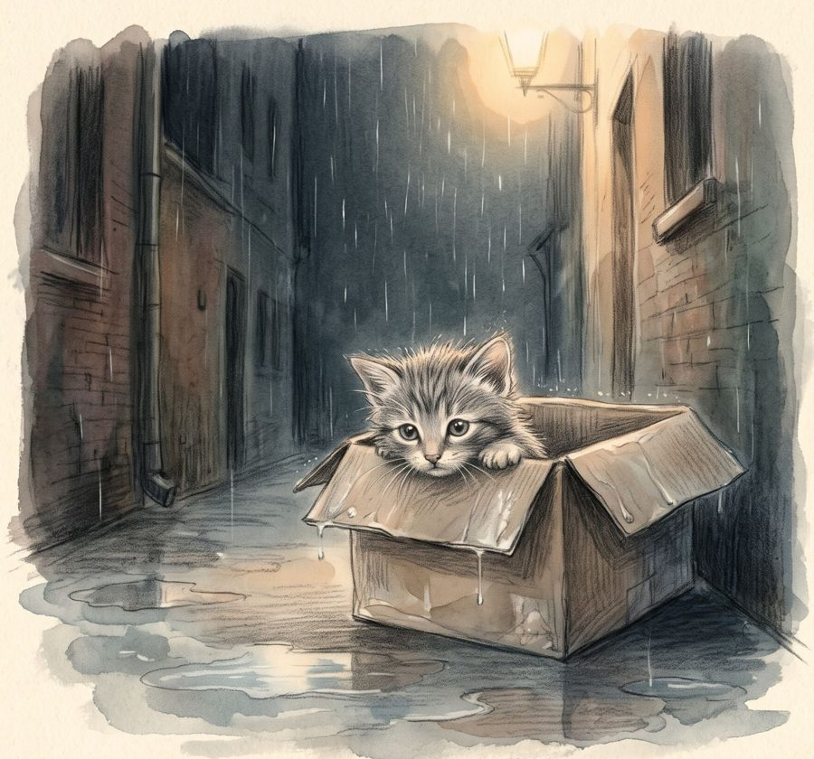
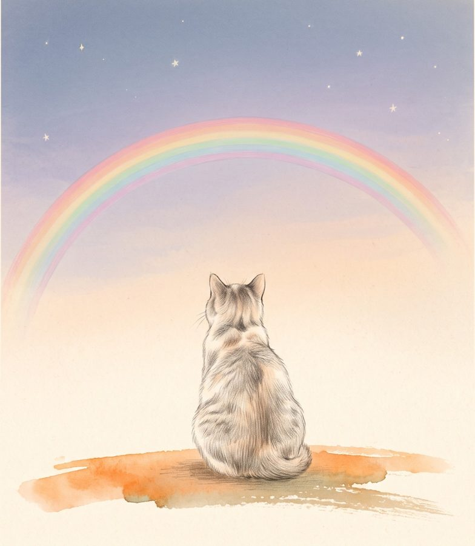

<!doctype html>
<html lang="ja">
<head>
<meta charset="utf-8">
<meta name="viewport" content="width=device-width, initial-scale=1, viewport-fit=cover">
<title>ねこを飼おう</title>
<meta name="description" content="雨の日、段ボール箱の中で子ねこを見つけた。いっしょに大きくなって、年をとって、さよならの日まで。ブラウザで無料で遊べるねこ育てゲーム。">
<meta property="og:title" content="ねこを飼おう">
<meta property="og:description" content="雨の日、段ボール箱の中で子ねこを見つけた。いっしょに大きくなって、年をとって、さよならの日まで。">
<meta property="og:image" content="https://mochachen1225-create.github.io/cat/og.jpg">
<meta property="og:type" content="website">
<meta name="twitter:card" content="summary_large_image">
<link rel="icon" href="data:image/svg+xml,%3Csvg xmlns='http://www.w3.org/2000/svg' viewBox='0 0 100 100'%3E%3Ctext y='.9em' font-size='90'%3E%F0%9F%90%B1%3C/text%3E%3C/svg%3E">
<meta name="claude:viewport-fit-sides" content="cover">
<link rel="preconnect" href="https://fonts.googleapis.com">
<link rel="preconnect" href="https://fonts.gstatic.com" crossorigin>
<link rel="stylesheet" href="https://fonts.googleapis.com/css2?family=Huninn&family=LXGW+WenKai+TC:wght@400&display=swap">
<style>
/* Layout: one narrow storybook column — a lit room (the stage) above a wooden toy-shelf of controls, set on a night-ink page. */
:root{
  --ink:#1E2638;        /* page night */
  --ink-2:#2A3450;      /* raised panels */
  --paper:#F4EFE4;      /* text on ink, letter paper */
  --wall:#DDE6DE;       /* room wall, pale sage */
  --wood:#C7965F;       /* floor */
  --wood-dk:#A57843;
  --eye:#F2B53B;        /* accent: cat-eye amber */
  --blush:#F08DA2;      /* hearts */
  --muted:#9AA5BE;
  --danger:#E7756A;
  --ok:#8CC98A;
  --display:"Huninn","jf-openhuninn","Yuanti TC","PingFang TC","Microsoft JhengHei",sans-serif;   /* rounded 粉圓 */
  --body:"Huninn","jf-openhuninn","Yuanti TC","PingFang TC","Microsoft JhengHei",system-ui,sans-serif;
  --letter:"LXGW WenKai TC","Kaiti TC","STKaiti","BiauKai",serif;  /* the cat's handwritten letter */
  color-scheme:dark;
}
*{box-sizing:border-box}
html,body{height:100%}
body{margin:0;background:var(--ink);color:var(--paper);font-family:var(--body);font-size:15px;
  background-image:radial-gradient(1px 1px at 20% 30%,#ffffff55 50%,transparent 51%),radial-gradient(1px 1px at 70% 10%,#ffffff44 50%,transparent 51%),radial-gradient(1.5px 1.5px at 85% 60%,#ffffff33 50%,transparent 51%),radial-gradient(1px 1px at 40% 80%,#ffffff33 50%,transparent 51%);
  background-size:220px 220px;-webkit-tap-highlight-color:transparent}
#app{max-width:520px;margin:0 auto;min-height:100%;display:flex;flex-direction:column;gap:12px;
  padding-block:14px 24px;padding-left:max(16px,env(safe-area-inset-left,0px));padding-right:max(16px,env(safe-area-inset-right,0px))}
h1,h2,h3,.disp{font-family:var(--display);font-weight:400;text-wrap:balance;margin:0}
button{font:inherit;color:inherit;cursor:pointer}
button:focus-visible,input:focus-visible,label:focus-within{outline:3px solid var(--eye);outline-offset:2px}

/* header */
.top{display:flex;align-items:flex-end;justify-content:space-between;gap:8px;flex-wrap:wrap}
.top h1{font-size:28px;line-height:1.1}
.top .sub{color:var(--muted);font-size:13px;margin-top:4px;font-variant-numeric:tabular-nums}
.chips{display:flex;gap:6px;flex-wrap:wrap}
.chip{font-size:12px;padding:3px 10px;border-radius:999px;background:var(--ink-2);color:var(--paper);letter-spacing:.05em}
.chip.amber{background:var(--eye);color:var(--ink);font-weight:700}

/* room stage */
.room{position:relative;width:100%;aspect-ratio:1/0.86;border-radius:22px;overflow:hidden;background:#FFF4EA;
  box-shadow:0 0 0 6px var(--ink-2),0 18px 40px #0008;user-select:none}
.room .floor{position:absolute;left:0;right:0;bottom:0;height:30%;
  background:repeating-linear-gradient(90deg,var(--wood) 0 58px,var(--wood-dk) 58px 60px);box-shadow:inset 0 6px 0 #0000001a}
.spot{position:absolute;pointer-events:none;z-index:1}
.spot svg{display:block;width:100%;height:100%;overflow:visible}
.s-wall{right:5%;top:10%;width:32%;height:28%}
.s-floorL{left:1%;bottom:21%;width:25%;height:56%}
.s-floorR{right:1%;bottom:21%;width:24%;height:32%}
.s-floorC{right:27%;bottom:25%;width:17%;height:19%}
.s-front{left:1%;bottom:1%;width:22%;height:22%;z-index:3}
.room .dim{position:absolute;inset:0;background:#0B1030;opacity:0;pointer-events:none;transition:opacity 1s;z-index:4}
.room.t2 .dim{opacity:.3}
.room.t3 .dim{opacity:.62}
.room .bg{position:absolute;inset:0;width:100%;height:100%;display:block}
.room .sun,.room .dusk,.room .moon{opacity:0;transition:opacity 1s}
.room.t0 .sun,.room.t1 .dusk,.room.t2 .moon,.room.t3 .moon{opacity:1}
.room .sky{fill:#BFE6FA;transition:fill 1s}.room.t1 .sky{fill:#FFD9A8}.room.t2 .sky,.room.t3 .sky{fill:#3C4A86}
.room .star{opacity:0;transition:opacity 1s}.room.t2 .star,.room.t3 .star{opacity:1}
.catwrap{position:absolute;left:50%;bottom:7%;transform:translateX(-50%);cursor:pointer;transition:width .8s;touch-action:manipulation;z-index:2}
.catwrap.kitten{width:36%}.catwrap.adult{width:48%}.catwrap.senior{width:48%}
.catwrap svg{display:block;width:100%;height:auto;overflow:visible}
.catwrap .bob{transform-origin:50% 100%;animation:breath 3.2s ease-in-out infinite}
.catwrap.walking .bob{animation:walk .42s ease-in-out infinite}
.catwrap.senior.walking .bob{animation-duration:.7s}
.catwrap.right > svg{transform:scaleX(-1)}
@keyframes walk{0%,100%{transform:translateY(0) rotate(-3deg)}50%{transform:translateY(-5%) rotate(3deg)}}
.catwrap.flop .bob{animation:none;transform:translate(-6%,6%) rotate(-78deg) scale(.92);transition:transform .6s}
.catwrap.senior .bob{animation-duration:4.4s}
.catwrap.hop .bob{animation:hop .5s ease-out 2}
.catwrap.wiggle .bob{animation:wiggle .35s ease-in-out 3}
.catwrap.shrink .bob{animation:shrink .6s ease-in-out}
@keyframes breath{0%,100%{transform:scale(1,1)}50%{transform:scale(1.015,.985)}}
@keyframes hop{0%,100%{transform:translateY(0)}40%{transform:translateY(-22%) scale(.96,1.05)}}
@keyframes wiggle{0%,100%{transform:rotate(0)}25%{transform:rotate(-5deg)}75%{transform:rotate(5deg)}}
@keyframes shrink{0%,100%{transform:scale(1)}40%{transform:scale(1.06,.9)}}
.tail{animation:tail 2.4s ease-in-out infinite;transform-box:view-box}
.sleepy .tail{animation-duration:6s}
@keyframes tail{0%,100%{transform:rotate(0)}50%{transform:rotate(-14deg)}}
.eye{animation:blink 5.5s infinite;transform-box:fill-box;transform-origin:center}
@keyframes blink{0%,94%,100%{transform:scaleY(1)}96%{transform:scaleY(.08)}}


.bubble{position:absolute;left:50%;white-space:normal;width:max-content;top:5%;transform:translateX(-50%);max-width:78%;background:#fff;color:#2b2b33;font-family:var(--display);
  font-size:16px;line-height:1.45;padding:8px 14px;border-radius:16px;text-align:center;box-shadow:0 4px 12px #0002;z-index:5;transition:opacity .3s;z-index:5}
.bubble::after{content:"";position:absolute;left:50%;bottom:-8px;margin-left:-8px;border:8px solid transparent;border-bottom:0;border-top-color:#fff}
.bubble:empty{opacity:0}
.fx{position:absolute;inset:0;pointer-events:none;z-index:6;overflow:hidden}
.float{position:absolute;font-size:22px;animation:floatup 1.4s ease-out forwards;font-family:var(--display);font-weight:700;color:var(--blush);white-space:nowrap}
@keyframes floatup{0%{opacity:0;transform:translateY(0) scale(.6)}15%{opacity:1;transform:translateY(-8px) scale(1)}100%{opacity:0;transform:translateY(-90px) scale(1.1)}}
.zzz{position:absolute;font-family:var(--display);font-size:20px;color:#fff;animation:zzz 2.6s linear infinite;opacity:0}
@keyframes zzz{0%{opacity:0;transform:translate(0,0)}20%{opacity:1}100%{opacity:0;transform:translate(20px,-50px)}}

.narr{min-height:44px;font-family:var(--display);font-size:16px;line-height:1.6;color:var(--paper);padding:0 4px}

/* stats */
.stats{display:grid;grid-template-columns:repeat(5,1fr);gap:8px}
.stat{display:flex;flex-direction:column;gap:5px;min-width:0}
.stat .lab{font-size:12px;color:var(--muted);display:flex;justify-content:space-between;font-variant-numeric:tabular-nums}
.stat .bar{height:8px;border-radius:99px;background:#ffffff14;overflow:hidden}
.stat .bar i{display:block;height:100%;border-radius:99px;background:var(--eye);transition:width .6s}
.stat.low .bar i{background:var(--danger)}
.stat.bond .bar i{background:var(--blush)}

/* actions */
.actions{display:grid;grid-template-columns:repeat(3,1fr);gap:8px}
.act{background:var(--ink-2);border:0;border-radius:14px;padding:10px 6px;display:flex;flex-direction:column;align-items:center;gap:2px;
  box-shadow:inset 0 -3px 0 #0003;transition:transform .1s}
.act:active{transform:translateY(2px)}
.act .ic{font-size:22px;line-height:1.2}
.act .t{font-size:14px;font-weight:500}
.act .d{font-size:11px;color:var(--muted)}
.act:disabled{opacity:.4;cursor:default}
.act.primary{background:var(--eye);color:var(--ink)} .act.primary .d{color:#1e263899}
.ff{width:100%;border:2px dashed #ffffff26;background:none;border-radius:14px;padding:10px;font-weight:700;display:flex;flex-direction:column;align-items:center;gap:2px}
.ff small{font-weight:400;font-size:11px;color:var(--muted)}
.ff.on{border-style:solid;border-color:var(--eye);color:var(--eye)}
.deltas{display:flex;flex-wrap:wrap;gap:6px}
.deltas .d{font-size:12px;padding:3px 9px;border-radius:99px;font-variant-numeric:tabular-nums;font-weight:500}
.deltas .up{background:#8CC98A33;color:#2f6b2d}.deltas .dn{background:#E7756A2b;color:#9b3328}.deltas .warn{background:#2a2a3314;color:#5a5348}
.tabs{display:flex;gap:6px}
.tabs button{flex:1;border:0;border-radius:10px;padding:8px;background:#2a2a330d;color:#2a2a33;font-size:14px}
.tabs button[aria-pressed=true]{background:#2a2a33;color:#F4EFE4}
.shop{display:flex;flex-direction:column;gap:8px}
.shop .item{display:flex;align-items:center;gap:10px;padding:8px;border-radius:12px;background:#2a2a330a}
.shop .ic{width:52px;height:52px;flex:none;display:grid;place-items:center}
.shop .ic svg{width:100%;height:100%}
.shop .empty{font-size:12px;color:#9a917f;border:2px dashed #2a2a3326;border-radius:10px;width:44px;height:44px;display:grid;place-items:center}
.shop .tx{flex:1;min-width:0;display:flex;flex-direction:column;gap:2px}
.shop .tx b{font-size:15px}.shop .tx small{font-size:12px;color:#7b7468;line-height:1.5}
.shop .buy{border:0;border-radius:10px;padding:8px 12px;background:#F2B53B;color:#1E2638;font-weight:700;font-variant-numeric:tabular-nums}
.shop .buy:disabled{background:#2a2a3314;color:#9a917f}
.shop .own{font-size:12px;color:#5d8a5b}
.swap{display:flex;flex-wrap:wrap;gap:4px;margin-top:4px}
.swap button{border:1px solid #2a2a3326;background:#fff;border-radius:99px;padding:3px 10px;font-size:12px;color:#2a2a33}
.past{display:grid;grid-template-columns:repeat(2,1fr);gap:8px}
.pc{border:0;background:#2a2a330a;border-radius:14px;padding:10px;display:flex;flex-direction:column;align-items:center;gap:2px;color:#2a2a33}
.pc .mini{width:72px;display:block}.pc .mini svg{width:100%;height:auto;display:block}
.pc .ph{display:block;width:64px;height:64px;border-radius:50%;background:center/cover;margin:4px auto}
.pc small{font-size:11px;color:#7b7468}
.letter.small{font-size:15px;line-height:1.85;box-shadow:none;padding:14px;background-size:auto;min-height:0}
.carry{margin:0;color:var(--muted);font-size:13px;line-height:1.6}
.shopbtn{align-self:center;width:min(100%,320px);border:0;border-radius:20px;padding:14px 18px;background:#F08DA2;color:#2b1d24;
  display:flex;flex-direction:column;align-items:center;gap:2px;font-family:var(--display);font-size:20px;box-shadow:inset 0 -4px 0 #0002,0 6px 16px #F08DA233;transition:transform .1s}
.shopbtn span{font-size:28px;line-height:1.1}
.shopbtn small{font-family:var(--body);font-size:12px;color:#2b1d24b3}
.shopbtn:active{transform:translateY(2px)}
.guide{display:flex;flex-direction:column;gap:8px}
.guide .row{display:grid;grid-template-columns:56px 1fr;gap:10px;align-items:center;font-size:14px;line-height:1.5}
.guide .row b{font-weight:400;font-family:var(--display);font-size:16px}
.guide .ex{display:flex;flex-direction:column;gap:4px;font-size:12px;color:#7b7468}
.guide .bar{height:9px;border-radius:99px;background:#2a2a3314;overflow:hidden}.guide .bar i{display:block;height:100%;border-radius:99px}
.guide .warn{background:#E7756A1f;border-radius:12px;padding:10px 12px;font-size:14px;line-height:1.7;color:#7a2d24}
.adj{width:100%;max-width:300px;align-self:center;background:#DDE6DE;border-radius:16px;cursor:grab;touch-action:none;padding:6px}
.adj:active{cursor:grabbing}
.adj svg{width:100%;height:auto;display:block;pointer-events:none}
.zoom{display:flex;align-items:center;gap:10px;font-size:13px;color:#7b7468}
.zoom input{flex:1;accent-color:#F2B53B}
.foodcan{position:absolute;bottom:6%;width:11%;z-index:3;animation:fade .3s}
.foodcan svg{width:100%;height:auto;display:block;overflow:visible}
.langs{display:flex;gap:4px;background:var(--ink-2);border-radius:99px;padding:3px}
.langs a{font-size:12px;color:var(--muted);text-decoration:none;padding:3px 10px;border-radius:99px}
.langs a[aria-current]{background:var(--eye);color:var(--ink);font-weight:700}
.field .hint{font-size:12px;color:var(--muted)}
.top{position:relative}
.top:has(.pausebtn){padding-top:34px}
.pausebtn{position:absolute;top:0;right:0;border:0;background:var(--ink-2);color:var(--paper);border-radius:99px;padding:5px 12px;font-size:13px;box-shadow:inset 0 -2px 0 #0003}
.pausecat{width:46%;align-self:center}.pausecat svg{width:100%;height:auto;display:block}
.chip.wish{background:#FFB3C1;color:#2B2B2B}.chip.wish.done{background:#A8DDA0}
.room.painted{aspect-ratio:900/840;background:#F6EEDF}
.sky.painted{aspect-ratio:784/900;max-height:72vh;background:#F6EEDF;display:flex;justify-content:center}
.painted img{display:block;width:100%;height:100%;object-fit:cover;animation:fade 1.2s}
.links{display:flex;justify-content:space-between;gap:8px;flex-wrap:wrap}
.linkbtn{background:none;border:0;color:var(--muted);font-size:13px;text-decoration:underline;text-underline-offset:3px;padding:4px}

/* intro */
.street{background:linear-gradient(#5a6680,#7d879a)}
.street .floor{background:#4d5466;height:24%}
.rain{position:absolute;inset:0;pointer-events:none;background-image:linear-gradient(105deg,transparent 48%,#ffffff40 49%,#ffffff40 51%,transparent 52%);
  background-size:26px 60px;animation:rain .45s linear infinite;opacity:.8}
@keyframes rain{to{background-position:-12px 60px}}
.box{position:absolute;left:50%;bottom:10%;width:52%;transform:translateX(-50%);z-index:3;pointer-events:none}
.box .front{position:relative;height:0;padding-bottom:46%;background:#C39058;border-radius:4px;box-shadow:inset 0 -10px 0 #0001}
.box .front span{position:absolute;left:0;right:0;top:30%;text-align:center;font-family:var(--display);color:#5a3d1e;font-size:clamp(12px,3.4vw,17px)}
.box .flap{position:absolute;top:-16%;width:52%;height:22%;background:#B07D46;border-radius:3px}
.box .flap.l{left:-6%;transform:rotate(-14deg)}.box .flap.r{right:-6%;transform:rotate(14deg)}
.peek{position:absolute;left:50%;bottom:22%;width:30%;transform:translateX(-50%);z-index:2;transition:bottom .8s}
.peek.up{bottom:26%}
.panel{display:flex;flex-direction:column;gap:12px}
.panel p{margin:0;font-family:var(--display);font-size:17px;line-height:1.75}
.btnrow{display:flex;gap:8px;flex-wrap:wrap}
.btn{border:0;border-radius:12px;padding:11px 18px;background:var(--ink-2);font-weight:500;box-shadow:inset 0 -3px 0 #0003}
.btn.primary{background:var(--eye);color:var(--ink);font-weight:700}
.field{display:flex;flex-direction:column;gap:6px}
.field label{font-size:13px;color:var(--muted)}
.field input[type=text],.field input[type=number]{font:inherit;font-size:18px;font-family:var(--display);padding:10px 12px;border-radius:12px;border:2px solid var(--ink-2);background:#ffffff0d;color:var(--paper)}
.sugs{display:flex;gap:6px;flex-wrap:wrap}
.sugs button{border:1px solid #ffffff22;background:none;border-radius:99px;padding:4px 12px;font-size:13px}
.seg{display:flex;gap:6px}
.seg button{flex:1;border:2px solid var(--ink-2);background:none;border-radius:12px;padding:8px}
.seg button[aria-pressed=true]{border-color:var(--eye);color:var(--eye)}
.upload{display:flex;align-items:center;gap:12px;padding:12px;border:2px dashed #ffffff26;border-radius:14px}
.upload .thumb{width:64px;height:56px;border-radius:12px;background:#ffffff10;flex:none;display:grid;place-items:center;font-size:22px}
.upload .thumb svg{width:100%;height:auto;display:block}
.upload .txt{flex:1;min-width:0;font-size:13px;color:var(--muted);line-height:1.5}
.upload .txt b{color:var(--paper);font-weight:500;display:block;font-size:14px}
.visually-hidden{position:absolute;width:1px;height:1px;overflow:hidden;clip:rect(0 0 0 0)}

/* modal */
.modal{position:fixed;inset:0;background:#0b1020b3;display:grid;place-items:center;z-index:50;
  padding:max(16px,env(safe-area-inset-top,0px)) max(16px,env(safe-area-inset-right,0px)) max(16px,env(safe-area-inset-bottom,0px)) max(16px,env(safe-area-inset-left,0px));animation:fade .25s}
@keyframes fade{from{opacity:0}}
.card{background:var(--paper);color:#2a2a33;border-radius:20px;padding:20px;max-width:420px;width:100%;max-height:86vh;overflow:auto;display:flex;flex-direction:column;gap:12px;
  box-shadow:0 20px 50px #0008;animation:pop .3s cubic-bezier(.2,1.4,.5,1)}
@keyframes pop{from{transform:scale(.9)}}
.card .kicker{font-size:12px;letter-spacing:.12em;color:#8a7f6d}
.card h2{font-size:24px}
.card p{margin:0;white-space:pre-line;font-family:var(--display);font-size:17px;line-height:1.7}
.card .opts{display:flex;flex-direction:column;gap:8px}
.card .opt{text-align:left;border:0;border-radius:12px;padding:12px 14px;background:#2a2a330d;color:#2a2a33;font-size:15px;box-shadow:inset 0 -2px 0 #0001}
.card .opt:hover{background:#2a2a331a}
.card .opt small{display:block;color:#7b7468;font-size:12px;margin-top:2px}
.card .res{background:#F2B53B2e;border-radius:12px;padding:10px 12px}
.mem{display:grid;grid-template-columns:76px 1fr;gap:4px 12px;font-size:14px;line-height:1.6}
.mem .a{color:#8a7f6d;font-variant-numeric:tabular-nums}
.mem .x{font-family:var(--display);font-size:15px}

/* ending */
.sky{position:relative;border-radius:22px;overflow:hidden;aspect-ratio:1/0.75;background:radial-gradient(ellipse at 50% 120%,#3b4a7a,#141a33 70%)}
.sky .stars{position:absolute;inset:0;background-image:radial-gradient(1.5px 1.5px at 10% 20%,#fff 50%,transparent 51%),radial-gradient(1px 1px at 30% 60%,#fff 50%,transparent 51%),radial-gradient(2px 2px at 80% 30%,#fff 50%,transparent 51%),radial-gradient(1px 1px at 60% 15%,#fff 50%,transparent 51%),radial-gradient(1.5px 1.5px at 90% 70%,#fff 50%,transparent 51%);background-size:160px 160px;animation:twinkle 4s ease-in-out infinite alternate}
@keyframes twinkle{to{opacity:.5}}
.sky .bow{position:absolute;left:50%;bottom:-62%;width:120%;aspect-ratio:1;transform:translateX(-50%);border-radius:50%;
  background:radial-gradient(circle,transparent 52%,#e7756a55 52% 55%,#f2b53b55 55% 58%,#8cc98a55 58% 61%,#7fb7e655 61% 64%,#b49ae055 64% 67%,transparent 67%)}
.sky .soul{position:absolute;left:50%;bottom:24%;width:34%;transform:translateX(-50%);animation:drift 5s ease-in-out infinite;opacity:.95}
@keyframes drift{50%{transform:translate(-50%,-6%)}}
.letter{background:var(--paper);color:#2f2a26;border-radius:6px 6px 18px 18px;padding:22px 20px;font-family:var(--letter);font-size:17px;line-height:1.95;white-space:pre-wrap;
  background-image:repeating-linear-gradient(transparent 0 32px,#c9bfae55 32px 33px);background-position:0 18px;box-shadow:0 12px 30px #0006;min-height:200px}
.letter .cur{display:inline-block;width:2px;height:1em;background:#2f2a26;vertical-align:-2px;animation:blinkc 1s step-end infinite}
@keyframes blinkc{50%{opacity:0}}
.summary{display:grid;grid-template-columns:repeat(4,1fr);gap:8px;text-align:center}
.summary div{background:var(--ink-2);border-radius:12px;padding:10px 4px}
.summary b{display:block;font-family:var(--display);font-size:22px;color:var(--eye);font-variant-numeric:tabular-nums}
.summary span{font-size:11px;color:var(--muted)}
.fadeout{animation:fadeout 2.2s forwards}
@keyframes fadeout{to{opacity:0;filter:blur(4px)}}

@media (max-width:420px){.stats{grid-template-columns:repeat(5,1fr);gap:6px}.stat .lab{font-size:11px}.top h1{font-size:24px}.summary{grid-template-columns:repeat(2,1fr)}}
@media (prefers-reduced-motion:reduce){*,*::before,*::after{animation-duration:.01ms!important;animation-iteration-count:1!important;transition-duration:.01ms!important}}
</style>
</head>
<body>
<div id="app"></div>
<div id="modalRoot"></div>
<input type="file" id="photoInput" accept="image/*" class="visually-hidden" tabindex="-1">

<script>
(() => {
'use strict';
/* ---------- utilities ---------- */
const $ = s => document.querySelector(s);
const clamp = (v, a, b) => Math.max(a, Math.min(b, v));
const pick = a => a[Math.floor(Math.random() * a.length)];
const esc = s => String(s).replace(/[&<>"']/g, c => ({'&':'&amp;','<':'&lt;','>':'&gt;','"':'&quot;',"'":'&#39;'}[c]));
function mulberry32(a){return function(){a|=0;a=a+0x6D2B79F5|0;let t=Math.imul(a^a>>>15,1|a);t=t+Math.imul(t^t>>>7,61|t)^t;return((t^t>>>14)>>>0)/4294967296}}
const KEY = 'cat-life-v1';

/* ---------- coats ---------- */
const WHITE = '#FBF8F3';
const COATS = [
  {id:'orange',  name:'茶トラ',   base:'#EDA65E', stripe:'#CB7A33', tabby:true, eye:'#A6C85A', nose:'#E98A8A', names:['みかん','ちゃちゃ','おいも','かぼちゃ']},
  {id:'ow',      name:'茶白', base:'#EFAB68', stripe:'#D3843F', tabby:true, white:['muzzle','chest','paws'], eye:'#EDBB3A', nose:'#F09A9A', names:['ミルク','プリン','チーズ']},
  {id:'black',   name:'黒ねこ',   base:'#2C2A33', eye:'#F4C430', nose:'#6A5560', names:['おはぎ','ごま','くろみつ','Luna']},
  {id:'white',   name:'白ねこ',   base:'#FAF7F1', eye:'#86BEEA', eye2:'#EDC33F', nose:'#F4A3AC', names:['おもち','だいふく','ゆき']},
  {id:'grey',    name:'グレー',   base:'#8E98A6', eye:'#EAA93C', nose:'#82707C', names:['ぎん','てつ','かすみ']},
  {id:'tabby',   name:'キジトラ', base:'#A9896A', stripe:'#4E3C2C', tabby:true, white:['muzzle'], eye:'#B9C64B', nose:'#D88A80', names:['トラ','こむぎ','くり']},
  {id:'calico',  name:'三毛', base:'#FAF6EE', patches:['#E59B50','#33302F'], eye:'#DDAA36', nose:'#F2A0A6', names:['ミケ','はな','あずき']},
  {id:'tuxedo',  name:'ハチワレ', base:'#28262D', white:['muzzle','chest','paws'], eye:'#A0C760', nose:'#F2A3AB', names:['ハチ','オセロ','モーモー']},
  {id:'siamese', name:'シャム', base:'#F0E5D3', points:'#5D4538', eye:'#72AEE6', nose:'#5D4538', names:['ココア','キャラメル','ラテ']},
  {id:'tortie',  name:'サビ', base:'#3C2D27', patches:['#CD7B3D','#9A6238'], eye:'#E3AB3C', nose:'#6E4E46', names:['ショコラ','こげ','かりんとう']},
  {id:'gw',      name:'グレー白', base:'#9299A4', white:['muzzle','chest','paws','belly'], eye:'#E6B53E', nose:'#F0A0A8', names:['ハイジ','こめ','おばけ']},
];
const COAT = Object.fromEntries(COATS.map(c => [c.id, c]));
const lum = hex => {const n=parseInt(hex.slice(1),16);return (0.299*(n>>16)+0.587*(n>>8&255)+0.114*(n&255))/255};
const darken = (hex, f) => {const n=parseInt(hex.slice(1),16);const r=Math.round((n>>16)*f),g=Math.round((n>>8&255)*f),b=Math.round((n&255)*f);return '#'+((1<<24)|(r<<16)|(g<<8)|b).toString(16).slice(1)};

/* ---------- drawing ---------- */
const soften = (hex, k) => {const n=parseInt(hex.slice(1),16);const f=v=>Math.round(v+(255-v)*k);return '#'+((1<<24)|(f(n>>16)<<16)|(f(n>>8&255)<<8)|f(n&255)).toString(16).slice(1)};
// the round silhouette an uploaded photo is cut into
function dangoShape(stage){
  const cx = 100;
  const P = stage==='kitten' ? {T:112,Bm:200,a:46,b:52} : stage==='senior' ? {T:96,Bm:200,a:54,b:68} : {T:94,Bm:200,a:53,b:64};
  const {T,Bm,a,b} = P, hy = T + a*.82, mid = Bm - hy;
  const blob = `M${cx-a},${hy} C${cx-a},${T+a*.22} ${cx-a*.55},${T} ${cx},${T} C${cx+a*.55},${T} ${cx+a},${T+a*.22} ${cx+a},${hy}
    C${cx+a*1.04},${hy+mid*.3} ${cx+b*1.06},${Bm-mid*.35} ${cx+b*.95},${Bm-7} C${cx+b*.82},${Bm+2} ${cx-b*.82},${Bm+2} ${cx-b*.95},${Bm-7}
    C${cx-b*1.06},${Bm-mid*.35} ${cx-a*1.04},${hy+mid*.3} ${cx-a},${hy}Z`;
  const earL = [[cx-a*.97,hy-a*.42],[cx-a*.8,T-a*.26],[cx-a*.3,T+a*.06]], earR = earL.map(([x,y])=>[2*cx-x,y]);
  return {T,Bm,a,b,hy,mid,blob,earL,earR};
}
// "sticker" style: Japanese planner-sticker look — 1:1 head and body, thick #2B2B2B line, white die-cut edge, macaron colours
const INK = '#2B2B2B';
function duckSVG(x, y, s=1){
  return `<g transform="translate(${x} ${y}) scale(${s})" stroke="${INK}" stroke-width="2.4" stroke-linejoin="round">
<ellipse cx="0" cy="6" rx="14" ry="9" fill="#FFE27A"/><circle cx="-5" cy="-6" r="8.5" fill="#FFE27A"/>
<path d="M-13,-6 Q-20,-5 -13,-2Z" fill="#FFAE5C"/><path d="M6,4 Q12,0 13,6" fill="none"/>
<circle cx="-7" cy="-8" r="1.6" fill="${INK}" stroke="none"/><ellipse cx="-2" cy="-3" rx="2.4" ry="1.4" fill="#FFB3C1" stroke="none"/></g>`;
}
function leafSVG(x, y){
  return `<g transform="translate(${x} ${y}) rotate(-20)" stroke="${INK}" stroke-width="2.4" stroke-linejoin="round" stroke-linecap="round">
<path d="M0,6 C-12,-2 -6,-18 8,-20 C12,-8 10,4 0,6Z" fill="#A8DDA0"/><path d="M0,6 L5,-12" fill="none" stroke-width="1.8"/><path d="M0,6 L-2,12" fill="none"/></g>`;
}
function canSVG(x, y, s=1){
  return `<g transform="translate(${x} ${y}) scale(${s})" stroke="${INK}" stroke-width="2.4" stroke-linejoin="round">
<path d="M-16,0 L-14,16 Q0,20 14,16 L16,0Z" fill="#BFE3F5"/><ellipse cx="0" cy="0" rx="16" ry="5" fill="#E9F6FC"/>
<ellipse cx="0" cy="-3" rx="13" ry="6" fill="#F6C59A"/><path d="M-6,-6 q3,-4 6,0 M2,-5 q3,-4 6,0" fill="none" stroke-width="1.6"/>
<path d="M-7,9 q4,-4 8,0 q-4,4 -8,0Z M1,9 l4,-3 v6Z" fill="#FF9AAE" stroke-width="1.4"/></g>`;
}
const pawPrint = (x, y, r, k=1) => `<g transform="translate(${x} ${y}) rotate(${r}) scale(${k})" fill="#FFB3C1"><ellipse cx="0" cy="4" rx="5.5" ry="4.5"/><circle cx="-5.5" cy="-3" r="2.2"/><circle cx="-1.8" cy="-6" r="2.2"/><circle cx="2.2" cy="-6" r="2.2"/><circle cx="5.8" cy="-3" r="2.2"/></g>`;
function stickerSVG(coatId, seed, stage, expr, ageM, deco){
  const c0 = COAT[coatId], rnd = mulberry32(seed||1), id = 'k'+(++uidN);
  const dark = lum(c0.base) < .3;
  const mac = h => soften(h, dark ? .12 : .32);
  const c = {...c0, base:mac(c0.base), stripe:c0.stripe&&mac(c0.stripe), points:c0.points&&mac(c0.points), patches:c0.patches&&c0.patches.map(mac)};
  const W2 = dark ? WHITE : WHITE;
  const cx = 100, kit = stage==='kitten', old = stage==='senior';
  const H = kit ? {cy:132,rx:50,ry:42} : {cy:118,rx:52,ry:43};
  const B = kit ? {cy:176,rx:38,ry:27} : {cy:170,rx:old?52:47,ry:33};
  const earL = [[cx-H.rx*.92,H.cy-H.ry*.38],[cx-H.rx*.72,H.cy-H.ry*1.22],[cx-H.rx*.28,H.cy-H.ry*.92]], earR = earL.map(([x,y])=>[2*cx-x,y]);
  const poly = p => p.map(q=>q.map(v=>v.toFixed(1)).join(',')).join(' ');
  const inner = p => {const mx=(p[0][0]+p[1][0]+p[2][0])/3,my=(p[0][1]+p[1][1]+p[2][1])/3;return p.map(([x,y])=>[mx+(x-mx)*.45,my+(y-my)*.45+3])};
  const bot = B.cy + B.ry, paws = [[cx-14,bot-3],[cx+14,bot-3]];
  const tx = cx + B.rx*.7, ty = B.cy + B.ry*.45;
  const tailD = `M${tx},${ty} C${tx+24},${ty+4} ${tx+30},${ty-22} ${tx+16},${ty-34}`;
  const shapes = `<polygon points="${poly(earL)}"/><polygon points="${poly(earR)}"/><ellipse cx="${cx}" cy="${B.cy}" rx="${B.rx}" ry="${B.ry}"/><ellipse cx="${cx}" cy="${H.cy}" rx="${H.rx}" ry="${H.ry}"/>`;
  const tw = 17;   // chunky tail
  // union outline: stroke everything wide underneath, then fill on top (white die-cut edge, then ink)
  const edge = (col, w) => `<g fill="${col}" stroke="${col}" stroke-width="${w}" stroke-linejoin="round">${shapes}</g>`;
  const tailEdge = (col, w) => `<path d="${tailD}" stroke="${col}" stroke-width="${tw+w}" fill="none" stroke-linecap="round"/>`;
  let tail = `<path d="${tailD}" stroke="${c.base}" stroke-width="${tw}" fill="none" stroke-linecap="round"/>`;
  if(c.tabby) tail += `<path d="${tailD}" stroke="${c.stripe}" stroke-width="${tw}" fill="none" stroke-dasharray="6 7"/>`;
  if(c.points) tail += `<path d="${tailD}" stroke="${c.points}" stroke-width="${tw}" fill="none" stroke-linecap="round" stroke-dasharray="0 18 200"/>`;
  if(c.patches) tail += `<path d="${tailD}" stroke="${c.patches[0]}" stroke-width="${tw}" fill="none" stroke-linecap="round" stroke-dasharray="14 10"/>`;
  // markings
  const Wt = c.white || [];
  const ey = H.cy + H.ry*.12, ex = H.rx*.48, my = H.cy + H.ry*.42;
  let ov = '';
  if(Wt.includes('belly') || Wt.includes('chest')) ov += `<ellipse cx="${cx}" cy="${B.cy+4}" rx="${B.rx*.55}" ry="${B.ry*.8}" fill="${W2}"/>`;
  if(c.tabby){
    for(let i=-1;i<=1;i++) ov += `<path d="M${cx+i*9},${H.cy-H.ry} L${cx+i*7.5},${H.cy-H.ry*.62}" stroke="${c.stripe}" stroke-width="4.5" stroke-linecap="round"/>`;
    for(const s of [-1,1]){ for(let j=0;j<2;j++) ov += `<path d="M${cx+s*(H.rx+2)},${H.cy-6+j*10} L${cx+s*H.rx*.74},${H.cy-2+j*10}" stroke="${c.stripe}" stroke-width="4" stroke-linecap="round"/>`;
      for(let j=0;j<3;j++) ov += `<path d="M${cx+s*(B.rx+3)},${B.cy-12+j*12} Q${cx+s*B.rx*.7},${B.cy-8+j*12} ${cx+s*B.rx*.55},${B.cy-14+j*12}" stroke="${c.stripe}" stroke-width="5" fill="none" stroke-linecap="round"/>`; }
  }
  if(c.patches){
    const sL = rnd() < .5 ? -1 : 1;
    ov += `<ellipse cx="${cx+sL*H.rx*.55}" cy="${H.cy-H.ry*.6}" rx="${H.rx*.6}" ry="${H.ry*.55}" fill="${c.patches[0]}"/>`;
    if(rnd() < .6) ov += `<ellipse cx="${cx-sL*H.rx*.75}" cy="${H.cy-H.ry*.75}" rx="${H.rx*.32}" ry="${H.ry*.32}" fill="${c.patches[1]}"/>`;
    ov += `<ellipse cx="${cx-sL*B.rx*.6}" cy="${B.cy+2}" rx="${B.rx*.42}" ry="${B.ry*.55}" fill="${c.patches[1%c.patches.length]}"/><ellipse cx="${cx+sL*B.rx*.8}" cy="${B.cy-6}" rx="${B.rx*.3}" ry="${B.ry*.4}" fill="${c.patches[0]}"/>`;
  }
  if(Wt.includes('muzzle')) ov += `<ellipse cx="${cx}" cy="${my+2}" rx="${H.rx*.5}" ry="${H.ry*.36}" fill="${W2}"/>` + (c.id==='tuxedo' ? `<path d="M${cx-8},${my-4} L${cx},${H.cy-H.ry*.7} L${cx+8},${my-4}Z" fill="${W2}"/>` : '');
  if(c.points) ov += `<g filter="url(#${id}b)"><ellipse cx="${cx}" cy="${my-2}" rx="${H.rx*.46}" ry="${H.ry*.4}" fill="${c.points}"/><polygon points="${poly(earL)}" fill="${c.points}"/><polygon points="${poly(earR)}" fill="${c.points}"/></g>`;
  if(ageM >= 132) ov += `<ellipse cx="${cx}" cy="${my}" rx="${H.rx*.5}" ry="${H.ry*.3}" fill="#fff" opacity=".45" filter="url(#${id}b)"/>`;
  const pawFill = Wt.includes('paws') ? W2 : c.points || c.base;
  // face
  const faceBase = Wt.includes('muzzle') ? W2 : c.base;
  const eyeDark = !!c.points || dark;
  const fl = (c.points || lum(faceBase) < .3) ? '#FFF6EC' : INK;
  const eyes = [-1,1].map((s,i) => {
    const x = cx + s*ex;
    if(expr==='happy') return `<path d="M${x-5},${ey+2} Q${x},${ey-5} ${x+5},${ey+2}" stroke="${fl}" stroke-width="3" fill="none" stroke-linecap="round"/>`;
    if(expr==='sleep') return `<path d="M${x-5},${ey} Q${x},${ey+5} ${x+5},${ey}" stroke="${fl}" stroke-width="3" fill="none" stroke-linecap="round"/>`;
    if(expr==='angry') return `<path d="M${x-s*4.5},${ey-4} L${x+s*3.5},${ey} L${x-s*4.5},${ey+4}" stroke="${fl}" stroke-width="3" fill="none" stroke-linecap="round" stroke-linejoin="round"/>`;
    if(expr==='dizzy') return `<path d="M${x-4},${ey-4} L${x+4},${ey+4} M${x+4},${ey-4} L${x-4},${ey+4}" stroke="${fl}" stroke-width="2.8" stroke-linecap="round"/>`;
    const k = kit ? 1.15 : 1;
    const sad = expr==='sad' ? `<path d="M${x-5},${ey-8+(s<0?-1.5:1.5)} L${x+5},${ey-8+(s<0?1.5:-1.5)}" stroke="${fl}" stroke-width="2.2" stroke-linecap="round"/><ellipse cx="${x+s*3}" cy="${ey+9}" rx="2.2" ry="3" fill="#8FD0F5"/>` : '';
    const dot = eyeDark
      ? `<circle cx="${x}" cy="${ey}" r="${6*k}" fill="#FFF6EC"/><ellipse cx="${x}" cy="${ey+.5}" rx="${3.6*k}" ry="${4.4*k}" fill="${INK}"/>`
      : `<ellipse cx="${x}" cy="${ey}" rx="${4*k}" ry="${4.8*k}" fill="${INK}"/>`;
    return `<g class="eye">${dot}<circle cx="${x-1.3*k}" cy="${ey-1.8*k}" r="${1.5*k}" fill="#fff"/></g>${sad}`;
  }).join('');
  const nose = `<ellipse cx="${cx}" cy="${my-5}" rx="2.6" ry="1.8" fill="${c0.nose}"/>`;
  const w = `M${cx-6},${my-1} Q${cx-3},${my+4} ${cx},${my-1} Q${cx+3},${my+4} ${cx+6},${my-1}`;
  const mouth = expr==='angry'||expr==='dizzy'||expr==='sad'
    ? `<path d="M${cx-4},${my+3} Q${cx},${my-1} ${cx+4},${my+3}" stroke="${fl}" stroke-width="2.2" fill="none" stroke-linecap="round"/>`
    : `<path d="${w}" stroke="${fl}" stroke-width="2.2" fill="none" stroke-linecap="round" stroke-linejoin="round"/>` + (expr==='happy' ? `<path d="M${cx-3},${my+1.5} Q${cx},${my+8} ${cx+3},${my+1.5}Z" fill="#FF8FA3"/>` : '');
  const blush = [-1,1].map(s => `<ellipse cx="${cx+s*H.rx*.66}" cy="${my-1}" rx="8.5" ry="5" fill="#FFB3C1" opacity="${expr==='happy'?.9:.75}"/>`).join('');
  const innerEar = '#FFC4CF';
  const hat = kit ? leafSVG(cx+10, H.cy-H.ry*1.02) : duckSVG(cx+8, H.cy-H.ry*1.12, .95);
  const bg = deco ? `<circle cx="100" cy="${(H.cy+B.cy)/2}" r="78" fill="${['#FFF1C9','#D9ECFA','#FFE0E6'][(seed||0)%3]}"/>${pawPrint(30,190,-20)}${pawPrint(178,92,25,.8)}${pawPrint(170,196,15,.9)}${pawPrint(36,100,-30,.7)}${canSVG(38,182,1)}` : '';
  return `<svg viewBox="${deco?'14 42 184 168':'0 52 212 160'}" xmlns="http://www.w3.org/2000/svg" aria-hidden="true">
<defs><clipPath id="${id}c">${shapes}</clipPath><filter id="${id}b" x="-50%" y="-50%" width="200%" height="200%"><feGaussianBlur stdDeviation="4"/></filter>
<filter id="${id}w" x="-10%" y="-10%" width="120%" height="120%"><feTurbulence type="fractalNoise" baseFrequency="0.03" numOctaves="2" seed="${(seed%50)+1}"/><feDisplacementMap in="SourceGraphic" scale="1.8" xChannelSelector="R" yChannelSelector="G"/></filter></defs>
${bg}
<ellipse cx="100" cy="${bot+4}" rx="${B.rx+10}" ry="6" fill="#0000001a"/>
<g class="bob ${expr==='sleep'?'sleepy':''}"><g filter="url(#${id}w)">
${edge('#fff', 14)}
<g class="tail" style="transform-origin:${tx}px ${ty}px">${tailEdge('#fff', 14)}${tailEdge(INK, 6)}${tail}</g>
${edge(INK, 6)}
<g fill="${c.base}">${shapes}</g>
<g clip-path="url(#${id}c)">${ov}</g>
<path d="M${cx-H.rx*.62},${H.cy+H.ry*.86} Q${cx},${H.cy+H.ry*1.12} ${cx+H.rx*.62},${H.cy+H.ry*.86}" stroke="${INK}" stroke-width="2.4" fill="none" stroke-linecap="round" opacity=".55"/>
<polygon points="${poly(inner(earL))}" fill="${innerEar}" stroke="${innerEar}" stroke-width="3" stroke-linejoin="round"/><polygon points="${poly(inner(earR))}" fill="${innerEar}" stroke="${innerEar}" stroke-width="3" stroke-linejoin="round"/>
<g stroke="${INK}" stroke-width="2.6">${paws.map(([x,y])=>`<ellipse cx="${x}" cy="${y}" rx="10" ry="7" fill="${pawFill}"/>`).join('')}</g>
${hat}</g>
${blush}${eyes}${nose}${mouth}
</g></svg>`;
}
let uidN = 0;
function catSVG(coatId, seed, stage, expr, ageM, deco){
  return stickerSVG(coatId, seed, stage, expr, ageM, deco);
}
// photo version: the user's own photo cut into the cat silhouette (body, ears and tail)
function photoCat(photo, stage, expr, pos = S && S.photoPos){
  const pz = pos || {x:0, y:0, z:1};
  const {T,Bm,a,b,blob,earL,earR} = dangoShape(stage), cx = 100, id = 'k'+(++uidN), line = '#6B5A53';
  const poly = p => p.map(q=>q.map(v=>v.toFixed(1)).join(',')).join(' ');
  const tx = cx+b*.86, ty = Bm-10, tk = stage==='kitten' ? .75 : 1;
  const tailD = `M${tx},${ty} C${tx+26*tk},${ty+2} ${tx+34*tk},${ty-30*tk} ${tx+18*tk},${ty-52*tk}`;
  // the photo covers the body's bounding box; ears and tail sample it too
  const by = T-a*.3, bh = Bm-by+4, bw = Math.max(bh, (b+4)*2), bx = cx - bw/2;
  const ar = pz.ar || 1, iw = bw*pz.z*Math.max(1, ar), ih = bh*pz.z*Math.max(1, 1/ar);
  const flt = stage==='senior' ? ' style="filter:saturate(.75) sepia(.15)"' : '';
  const markX = cx + a*.75, markY = T - 2;
  const marks = expr==='happy' ? `<text x="${markX}" y="${markY}" font-size="20">💕</text>`
    : expr==='sleep' ? `<text x="${markX}" y="${markY}" font-size="18" fill="#fff" stroke="#6B5A53" stroke-width=".6" font-family="serif">z z</text>`
    : expr==='angry' ? `<text x="${markX}" y="${markY}" font-size="20">💢</text>`
    : expr==='sad'||expr==='dizzy' ? `<text x="${markX}" y="${markY}" font-size="18">💧</text>` : '';
  return `<svg viewBox="4 66 204 146" xmlns="http://www.w3.org/2000/svg" aria-hidden="true">
<defs><pattern id="${id}p" patternUnits="userSpaceOnUse" x="${bx}" y="${by}" width="${bw}" height="${bh}">
<image href="${photo}" x="${(bw-iw)/2 + pz.x*bw}" y="${(bh-ih)/2 + pz.y*bh}" width="${iw}" height="${ih}" preserveAspectRatio="xMidYMid slice"${flt}/></pattern></defs>
<ellipse cx="100" cy="${Bm+3}" rx="${b+14}" ry="6" fill="#0000001c"/>
<g class="bob ${expr==='sleep'?'sleepy':''}">
<g class="tail" style="transform-origin:${tx}px ${ty}px"><path d="${tailD}" stroke="${line}" stroke-width="12.5" fill="none" stroke-linecap="round"/><path d="${tailD}" stroke="url(#${id}p)" stroke-width="8.5" fill="none" stroke-linecap="round"/></g>
<g stroke="${line}" stroke-width="2.3" stroke-linejoin="round" fill="url(#${id}p)"><polygon points="${poly(earL)}"/><polygon points="${poly(earR)}"/><path d="${blob}"/></g>
<g fill="none" stroke="#ffffffcc" stroke-width="2" stroke-linecap="round">${[[cx-15,Bm-3],[cx+15,Bm-3]].map(([x,y])=>`<path d="M${x-9},${y+1} Q${x},${y-9} ${x+9},${y+1}"/>`).join('')}</g>
${marks}
</g></svg>`;
}

// drag to move, slider to zoom; preview is the real cat-shaped cut
function photoAdjust(){
  if(!S.photo) return;
  const pos = {...(S.photoPos || {x:0, y:0, z:1})};
  const st = S.phase==='life' ? stage() : 'adult';
  modal(`<div class="kicker">写真の調整</div><h2>ねこを真ん中に</h2><p>指でドラッグして写真を動かせます。スライダーで拡大・縮小。拡大すると、もっと大きく動かせます。</p>
    <div class="adj" id="adj"></div>
    <div class="zoom"><span>小</span><input type="range" id="zoomIn" min="1" max="3" step="0.01" value="${pos.z}" aria-label="拡大・縮小"><span>大</span></div>
    <div class="opts"><button class="opt" id="adjOk" style="text-align:center;background:#F2B53B;font-weight:700">完了</button><button class="opt" id="adjReset" style="text-align:center;background:none">リセット</button></div>`, r => {
    const box = $('#adj'), zoom = $('#zoomIn');
    const draw = () => { box.innerHTML = photoCat(S.photo, st, 'normal', pos); };
    const ar = pos.ar || 1;
    // keep the photo covering the whole cat: it can only slide as far as it is bigger than the cat
    const lim = () => { const mx = (pos.z*Math.max(1,ar) - 1)/2, my = (pos.z*Math.max(1,1/ar) - 1)/2; pos.x = clamp(pos.x, -mx, mx); pos.y = clamp(pos.y, -my, my); };
    let drag = null;
    box.onpointerdown = e => { drag = {x:e.clientX, y:e.clientY, px:pos.x, py:pos.y}; box.setPointerCapture(e.pointerId); };
    box.onpointermove = e => {
      if(!drag) return;
      // the preview is ~1.5x the photo tile wide, so scale finger movement to the tile
      const w = box.clientWidth / 1.5;
      pos.x = drag.px + (e.clientX - drag.x) / w; pos.y = drag.py + (e.clientY - drag.y) / w; lim(); draw();
    };
    box.onpointerup = box.onpointercancel = () => { drag = null; };
    zoom.oninput = () => { pos.z = +zoom.value; lim(); draw(); };
    $('#adjReset').onclick = () => { pos.x = 0; pos.y = 0; pos.z = 1; zoom.value = 1; draw(); };
    $('#adjOk').onclick = () => { S.photoPos = {...pos}; save(); closeModal(); render(); };
    draw();
  });
}

/* ---------- language: index.html is Chinese; en.html / ja.html are generated from it (tools/build-i18n.py) ---------- */
const LANG = 'ja';
const LANGS = [['zh','中文','index.html'],['en','English','en.html'],['ja','日本語','ja.html']];   // i18n-skip
function langLinks(){ return `<nav class="langs">${LANGS.map(([k,name,href]) => `<a href="${href}" data-lang="${k}" ${k===LANG?'aria-current="page"':''}>${name}</a>`).join('')}</nav>`; }   // i18n-skip
function bindLangLinks(root){ root.querySelectorAll('[data-lang]').forEach(a => a.addEventListener('click', () => { try{ localStorage.setItem('cat-lang', a.dataset.lang); }catch(e){} })); }
function langPicker(){
  modal(`<div class="kicker">Language · 語言 · 言語</div><h2>🐾</h2><div class="opts">${LANGS.map(([k,name,href]) => `<a class="opt" style="text-align:center;text-decoration:none" href="${href}" data-lang="${k}">${name}</a>`).join('')}</div>`, r => bindLangLinks(r));   // i18n-skip
}

/* ---------- state ---------- */
const SLOTS = ['朝','昼','夜'];
let S = null;
function fresh(){
  return {v:1, phase:'intro', coatId:pick(COATS).id, seed:Math.floor(Math.random()*1e9), gender:Math.random()<.5?'f':'m', name:'', photo:null,
    ageM:1, slot:0, day:1, lifespanM:(13+Math.floor(Math.random()*6))*12, stats:{full:45,mood:40,clean:30,health:55,bond:5},
    counts:{pet:0,meal:0,play:0,brush:0,vet:0,bite:0,trip:0,er:0}, memories:[], flags:{}, seen:{}, sick:false, later:[], weight:0, neglect:{full:0,clean:0,mood:0}, money:300, owned:[], placed:{}, past:[], petsToday:0, treatsToday:0, bondFromPets:0, narr:''};
}
function load(){try{const s=JSON.parse(localStorage.getItem(KEY));if(s&&s.v===1)return s}catch(e){}return null}
function save(){try{localStorage.setItem(KEY,JSON.stringify(S))}catch(e){try{const t={...S,photo:null};localStorage.setItem(KEY,JSON.stringify(t))}catch(_){}}}

const P = () => S.gender==='f' ? 'この子' : 'この子';
const N = () => S.name || 'ねこちゃん';
const PRON = {f:{she:'she', She:'She', her:'her', his:'her'}, m:{she:'he', She:'He', her:'him', his:'his'}};
const fill = (t, v = {}) => t.replace(/\{(\w+)\}/g, (m, k) => k === 'n' ? N() : k === 'p' ? P() : (PRON[S.gender] && PRON[S.gender][k]) || (k in v ? v[k] : m));
const add = (k, d) => { S.stats[k] = clamp(S.stats[k] + d, 0, 100); };
const stage = (m = S.ageM) => m < 12 ? 'kitten' : m < 120 ? 'adult' : 'senior';
const stageName = m => m < 12 ? '子ねこ' : m < 84 ? 'おとな' : m < 132 ? 'ミドル' : 'シニア';
const ageLabel = m => m < 12 ? `${m}ヶ月` : `${Math.floor(m/12)}歳${m%12>=6?'半':''}`;
function humanAge(m){ if(m<=12) return [0,1,3,4,6,8,10,11,12,13,14,14,15][m]; const y=m/12; return y<2 ? Math.round(15+(y-1)*9) : Math.round(24+(y-2)*4); }
function mem(text){ S.memories.push({ageM:S.ageM, text:fill(text)}); }

/* ---------- events ----------
   choice.fx returns a result string, or {text, next:event} for a follow-up question. */
const EVENTS = [
  // travel — the big one
  {id:'trip', min:12, repeat:true, title:'海外旅行に行く？', text:'友だちから十日間の旅行に誘われた。航空券もとても安い。スーツケースを広げると、{n}がそばでじっと見ている。', choices:[
    {label:'行く！', hint:'お世話をだれに頼むか決めよう', fx:()=>({text:'航空券を予約した。さて、{n}はどうしよう？', next:{title:'{n}のお世話はだれに？', text:'十日間は長い。しっかり考えよう。', choices:[
      {label:'プロのキャットシッターに毎日来てもらう', hint:'いちばん安心。でもさみしがるかも', fx:()=>{S.counts.trip++;add('mood',-8);add('health',2);mem('旅行中、シッターさんから毎日{p}の写真が届いた');return '毎日シッターさんから写真が届いた。{n}はいつもあなたの枕の上で寝ていたみたい。帰ってきた日、三分間だけ知らんぷりをして、そのあとは一晩じゅうぴったりくっついて離れなかった。';}},
      {label:'ペットホテルに預ける', hint:'環境が変わると不安になる', fx:()=>{S.counts.trip++;add('mood',-18);add('health',-5);later('hotelStress',1,1);return '{n}はペットホテルで十日間、ずっとすみっこに隠れていた。家に帰ると部屋じゅうのにおいをかいでまわって、やっと安心して眠った。';}},
      {label:'友だちにときどき見に来てもらう', hint:'安上がり。でもちょっと心配', fx:()=>{S.counts.trip++;if(Math.random()<.5){add('full',-30);add('clean',-35);add('mood',-12);later('uti',1,2);return '友だちは忙しくて二日も忘れていた。帰ってくるとトイレはあふれていて、{n}に長いことニャーニャー怒られた。';}add('mood',-5);mem('友だちにお世話を頼んだら、{p}がひとまわり太って待っていた');return '友だちは{n}にメロメロで、毎日缶詰を開けてくれた。ちょっと太ったかも。';}},
    ]}})},
    {label:'行かない。おうちでいっしょに', hint:'', fx:()=>{add('bond',6);add('mood',8);mem('旅行をやめて、{p}といっしょに日なたぼっこをした');return 'スーツケースをしまおうとすると、{n}がすかさず飛びこんで、午後じゅうその中で眠っていた。';}},
  ]},
  {id:'mouse', min:6, title:'家の中にネズミが！', text:'夜中、台所からカサカサと音がする。{n}は耳をそっちに向けて、おしりをふりふりしはじめた。', choices:[
    {label:'まかせた！', fx:()=>{if(stage()==='senior'||Math.random()<.35){add('mood',-3);return '{n}が飛びかかる……けれどネズミはすぐ横をすり抜けていった。{n}は何もなかったような顔で毛づくろいをしている。';}add('mood',15);add('bond',3);if(Math.random()<.6)later('worms',2,4);mem('{p}が家のネズミをつかまえて、くわえて見せに来た');return 'ひと騒ぎのあと、{n}がネズミをくわえてあなたの前まで来て、ぽとりと置いて見上げた。ほめてほしいみたい。';}},
    {label:'ネズミ捕りをしかけて、別の部屋で待ってもらう', fx:()=>{add('mood',-4);return '次の日、ネズミはつかまった。{n}は閉じこめられていた部屋のドアに向かって、一日じゅうすねていた。';}},
  ]},
  {id:'cup', min:4, title:'ガシャーン！', text:'{n}はあなたの目をじっと見ながら、前足でテーブルのコップをゆっくり押して……落とした。', choices:[
    {label:'お説教する', fx:()=>{add('mood',-4);return 'ぷいっと横を向いて毛づくろい。ぜんぜん聞いていない。';}},
    {label:'まあいいか、記念に写真を', fx:()=>{add('bond',3);mem('{p}がコップを落としたのを、笑って写真に撮った');return '写真の{n}は、なんにも知りませんという顔をしている。';}},
  ]},
  {id:'gift', min:6, title:'プレゼント', text:'朝起きたら、枕もとに……ゴキブリが。{n}がとても得意げにとなりに座っている。', choices:[
    {label:'ありがとね（小さく悲鳴）', fx:()=>{add('bond',4);mem('{p}からゴキブリのプレゼントをもらった');return '{n}は大満足。どうやら、狩りのできない大きなねこだと思われているらしい。';}},
    {label:'だまってティッシュで片づける', fx:()=>{add('mood',-2);return 'プレゼントが捨てられるのを見て、{n}はちょっとしょんぼりした。';}},
  ]},
  {id:'keyboard', min:6, title:'残業中', text:'締め切りに追われていると、{n}がキーボードにどすんと座った：ggggggggggggggggg', choices:[
    {label:'ひと休みして遊ぶ', fx:()=>{add('mood',10);add('bond',3);mem('{p}がキーボードに座って「かまって」と言った');return 'パソコンを閉じた。{n}はまだあたたかいノートパソコンの上で、満足そうに丸くなった。';}},
    {label:'どかして仕事を続ける', fx:()=>{add('mood',-5);return '三十秒後、また戻ってきた。';}},
  ]},
  {id:'box', min:2, title:'段ボール箱', text:'通販の荷物が届いた。{n}は中身には興味がなくて、箱だけがほしいみたい。', choices:[
    {label:'箱をあげる', fx:()=>{add('mood',12);mem('{p}が初めての段ボールのお城を手に入れた');return '{n}がもぐりこんで、耳だけぴょこんと出している。';}},
  ]},
  {id:'bird', min:3, title:'窓ぎわ', text:'{n}が窓の外のスズメを見つめて、あごをふるわせながら「カカカカ」と鳴いている。', choices:[
    {label:'いっしょに鳥を見る', fx:()=>{add('bond',3);add('mood',5);return '午後じゅう、ふたりで鳥をながめていた。';}},
  ]},
  {id:'hairball', min:8, title:'オエッ——', text:'夜中に聞きなれた「ゲッ、ゲッ、ゲッ」という音。{n}がカーペットに毛玉を吐いた。', choices:[
    {label:'起きて片づけ、ついでにブラッシング', fx:()=>{add('clean',10);add('health',5);return 'ブラッシングで取れた毛で、もう一匹ねこが作れそうだ。';}},
    {label:'明日にしよう', fx:()=>{add('clean',-15);return '朝、はだしで踏んでしまった。';}},
  ]},
  {id:'bath', min:12, title:'お風呂の日', text:'そろそろ{n}をお風呂に入れる日。何かを察したのか、もうベッドの下に隠れている。', choices:[
    {label:'覚悟を決めて洗う', fx:()=>{add('clean',30);add('mood',-15);mem('お風呂大戦争。手にひっかき傷が三本できた');return '洗い終わった{n}はひとまわり小さくなって、とても傷ついた目でこちらを見ている。';}},
    {label:'また今度ね', fx:()=>{add('clean',-5);return '{n}はほっとひと息ついた。';}},
  ]},
  {id:'sick', min:12, repeat:true, title:'なんだか様子が変', text:'{n}は今日、ずっとベッドの下に隠れていて、ごはんもほとんど食べていない。', choices:[
    {label:'すぐ病院へ', fx:()=>{add('health',10);add('mood',-6);S.counts.vet++;return '早く気づけてよかった、と先生。注射一本でよくなった。帰り道、{n}はキャリーの中でずっと文句を言っていた。';}},
    {label:'もう一日様子を見る', fx:()=>{S.sick=true;add('health',-15);later('sickWorse',1,1);return '{n}はますます元気がなくなった。';}},
  ]},
  {id:'sunbath', min:3, title:'日なたぼっこ', text:'午後の日ざしがリビングにさしこんで、{n}はびよーんと長くのびている。', choices:[
    {label:'となりに寝ころぶ', fx:()=>{add('bond',3);add('mood',5);mem('床に寝ころんで、いっしょに日なたぼっこをした');return '床はぽかぽか。ふたりともそのまま眠ってしまった。';}},
  ]},
  {id:'lap', min:2, title:'ひざの上', text:'座ったとたん、{n}がひざに飛び乗って、三回まわって寝てしまった。ちょうどトイレに行こうと思っていたのに。', choices:[
    {label:'一歩も動かない（足がしびれた）', fx:()=>{add('bond',5);mem('{p}がひざで寝てしまい、一時間トイレをがまんした');return '一時間後、足の感覚はもうなかった。でも、それだけの価値はあった。';}},
    {label:'そっとどかす', fx:()=>{add('mood',-3);return '{n}はちらっとこちらを見て、ソファに移って寝なおした。';}},
  ]},
  {id:'rain', min:24, title:'雨の日', text:'外は雨。{n}を見つけたあの日みたいだ。気づけば、すぐそばで丸くなっている。', choices:[
    {label:'「あの日、出会えてよかった」', fx:()=>{add('bond',5);mem('雨の日、「あの日出会えてよかった」と{p}に話しかけた');return '{n}が頭をあなたの手にこつんと押しつけた。';}},
  ]},
  {id:'fish', min:8, title:'晩ごはんが消えた', text:'しょうゆを取ろうと振り返ったすきに、お皿の焼き魚が半分なくなっていた。{n}が口のまわりをなめている。', choices:[
    {label:'残りもあげちゃう', fx:()=>{add('full',10);add('mood',8);add('health',-3);if(Math.random()<.7)later('diarrhea',1,1);return '{n}にとっては最高の一日。';}},
    {label:'テーブルから下ろして、しっかりお説教', fx:()=>{add('mood',-3);return 'お説教を最後まで聞いて、大きなあくびをひとつ。';}},
  ]},
  {id:'toilet', min:6, title:'トイレの見張り', text:'トイレに入ったとたん、ドアの外からガリガリひっかく音と悲しげな鳴き声が。', choices:[
    {label:'ドアを開けて入れてあげる', fx:()=>{add('bond',3);return '{n}は入ってきて足もとに座り、あなたが無事か確かめるようにじっと見ている。';}},
    {label:'プライバシーを守る', fx:()=>{add('mood',-3);return 'ドアのすき間から、もふもふの手がにゅっと出てきた。';}},
  ]},
  {id:'xmas', min:10, title:'クリスマスツリー', text:'小さなクリスマスツリーを飾った。キラキラのオーナメントを見つめる{n}の目が、どんどんまんまるになっていく。', choices:[
    {label:'遊ばせてあげる', fx:()=>{add('mood',12);add('clean',-10);if(Math.random()<.6)later('ribbon',1,1);mem('{p}がツリーをたおして、オーナメントの山にいっしょに座った');return 'ツリーがたおれた。その真ん中に座る{n}は、世界でいちばん幸せなねこの顔をしている。';}},
    {label:'届かない場所にツリーを移す', fx:()=>{return '{n}は三日かけて研究して、やっぱり飛び乗った。';}},
  ]},
  {id:'stray', min:24, title:'窓の外のねこ', text:'毎日、窓辺にのらねこがやってくる。{n}はガラスごしにシャーッと威嚇している。', choices:[
    {label:'外にごはんを置いてあげる', fx:()=>{add('mood',-3);later('kittens',2,4);mem('のらねこにごはんをあげた。あの日、{p}をひろったときのように');return '{n}はやきもちをやいて、一晩じゅうあなたの上に座りこんでいた。だれのものか、はっきりさせたいらしい。';}},
    {label:'カーテンを閉める', fx:()=>{add('mood',2);return '{n}は勝ったと思っている。';}},
  ]},
  {id:'vetcheck', min:96, title:'年に一度の健康診断', text:'{n}も年をとってきたので、腎臓の数値に気をつけましょう、と先生。', choices:[
    {label:'療法食にして、水の器を増やす', fx:()=>{add('health',12);S.lifespanM+=4;return '{n}は新しいごはんを二日間いやがったけれど、そのうち慣れた。';}},
    {label:'たぶん大丈夫', fx:()=>{add('health',-10);later('kidney',3,6);return '先生は何か言いかけて、やめた。';}},
  ]},
  {id:'stairs', min:132, title:'もう跳べない', text:'{n}はソファの前で長いこと見上げていたけれど、結局跳ばずに、静かに床に伏せた。', choices:[
    {label:'抱き上げて、小さな階段を置く', fx:()=>{add('bond',4);add('mood',6);mem('{p}のためにソファの横に小さな階段を置いた');return '次の日、{n}は小さな階段を一段ずつのぼって、お気に入りの場所に戻った。';}},
  ]},
];
// night-time cat behaviours (the cute/annoying ones)
const NIGHT = [
  {id:'knead', min:2, title:'夜中の二時', text:'寝ていると、おなかの上を何かが左右交互にふみふみしている。{n}だ。ゴロゴロいいながらふみふみして、ときどき爪がちくっと刺さる。', choices:[
    {label:'ふみふみさせる（痛いけど幸せ）', fx:()=>{add('bond',5);add('mood',6);mem('夜中に{p}がおなかの上でふみふみ。ゴロゴロが小さなモーターみたいだった');return 'ふみふみが終わると、{n}は胸の上で丸くなって眠った。寝返りなんてとてもできない。';}},
    {label:'寝返りをうって寝る', fx:()=>{add('mood',-3);return '{n}は今度はあなたの顔をふみふみしはじめた。';}},
  ]},
  {id:'yowl', min:6, title:'夜中の三時', text:'「アオーン————オオーン————」{n}がおもちゃのネズミをくわえて、リビングで大声で鳴いている。', choices:[
    {label:'起きて「狩りが上手だね」とほめる', fx:()=>{add('bond',4);add('mood',8);mem('夜中に{p}が大声で鳴いて、おもちゃを自慢しに来た');return '{n}はおもちゃをあなたの足もとに置くと、静かになった。見てほしかっただけみたい。';}},
    {label:'ふとんをかぶる', fx:()=>{return 'それから十分鳴きつづけて、ベッドに飛び乗ってあなたの顔をふんだ。';}},
  ]},
  {id:'zoomies', min:2, title:'真夜中の大運動会', text:'ドドドドドッ——{n}が突然家じゅうを走りだした。ソファから本棚へ、本棚からあなたの上へ。', choices:[
    {label:'ねこじゃらしで付き合う', fx:()=>{add('mood',10);add('full',-6);return '走りおわった{n}は息をはずませて、満足そうに眠った。あなたは目がさえてしまった。';}},
    {label:'聞こえないふり', fx:()=>{return '朝起きたら、鉢植えがひとつたおれていた。';}},
  ]},
  {id:'face', min:4, title:'朝の五時', text:'目覚ましが鳴る前に、{n}が枕もとに座って、肉球でぽん、ぽん、とあなたの顔をたたく。', choices:[
    {label:'起きてごはんをあげる', fx:()=>{add('full',15);add('bond',2);S.flags.alarmCat=1;return '{n}は覚えた。五時に顔をたたけばごはんが出てくる。これから毎朝来るだろう。';}},
    {label:'枕に顔をうずめる', fx:()=>{add('mood',-2);return '今度は髪の毛をかじりはじめた。';}},
  ]},
  {id:'snore', min:24, title:'真夜中', text:'小さな「スー……スー……」という音。{n}がおなかを出して、あおむけでいびきをかいている。', choices:[
    {label:'こっそり録音する', fx:()=>{add('bond',3);mem('あおむけでいびきをかく{p}の寝息を録音した');return 'この録音を、何年も聞きかえした。';}},
  ]},
  {id:'pillow', min:12, title:'枕のとりあい', text:'夜中に目が覚めると、あなたはベッドのはしっこにいて、{n}が枕をまるごと占領していた。', choices:[
    {label:'ゆずってあげる', fx:()=>{add('bond',3);add('mood',4);return 'ふとんにくるまって、すみっこで寝た。下僕の日常。';}},
  ]},
  {id:'dream', min:3, title:'夢', text:'眠っている{n}のひげと手がぴくぴく動いて、小さく「ミィ……」と鳴いた。', choices:[
    {label:'そっと頭をなでる', fx:()=>{add('bond',2);mem('{p}が夢を見て、小さくミィミィ鳴いていた');return 'ぴくぴくがおさまって、ゴロゴロいいながら眠りつづけた。';}},
  ]},
];
// one-time story beats by age (months)
const MILESTONES = [
  {at:2, ev:{title:'ワクチン', text:'動物病院から電話。{n}の一回目のワクチンの時期ですよ、とのこと。', choices:[
    {label:'連れていく', fx:()=>{add('health',15);add('mood',-8);S.counts.vet++;mem('初めてのワクチン。診察室でずっとふるえていた');return '{n}は診察室でぷるぷるふるえていたけれど、よくがんばった。帰ってから、ごほうびにとろとろおやつをひとつ。';}},
    {label:'あとにする', fx:()=>{add('health',-5);later('panleuk',2,4);return 'なるべく早くね、と先生。';}}]}},
  {at:3, ev:{title:'ゴロゴロ', text:'{n}のあごをなでていると、小さな振動が伝わってきた。', choices:[
    {label:'……ゴロゴロいってる！', fx:()=>{add('bond',8);mem('初めて{p}のゴロゴロを聞いた');return '{n}が初めて、あなたのそばでゴロゴロいった。この音を一生聞いていようと決めた。';}}]}},
  {at:6, ev:{title:'避妊・去勢手術', text:'{n}が生後六ヶ月になった。先生から避妊・去勢手術をすすめられた。', choices:[
    {label:'手術を予約する', fx:()=>{add('health',8);add('mood',-10);S.lifespanM+=6;S.flags.neutered=1;mem('手術のあとエリザベスカラーをつけて、一日じゅうドアにぶつかっていた');return 'エリザベスカラーをつけた{n}は、一日じゅうドアにぶつかっていた。かわいそうだけど、ちょっと笑ってしまう。';}},
    {label:'もう少し考える', fx:()=>{add('mood',-5);later('spray',1,2);return 'その夜、{n}は一晩じゅう鳴きつづけた。';}}]}},
  {at:12, ev:{title:'一歳の誕生日', text:'{n}が一歳になった！ 小さな毛玉が、りっぱなおとなのねこに。', choices:[
    {label:'お祝いの缶詰を開ける', fx:()=>{add('mood',15);add('full',20);mem('一歳の誕生日、お祝いの缶詰を開けた');return '{n}は食べおわると、あなたの足に頭をすりすり。誕生日おめでとう。';}}]}},
  {at:84, ev:{title:'七歳', text:'{n}も七歳。そろそろミドル期に入ります、と先生。甘えんぼうなのは相変わらずだけど、寝ている時間が少し増えた。', choices:[
    {label:'これから毎年健康診断に行く', fx:()=>{add('health',10);S.lifespanM+=6;return 'カレンダーに印をつけた。';}}]}},
  {at:132, ev:{title:'白いひげ', text:'{n}の口もとに白い毛が何本か増えて、ベッドに跳び乗る動きもゆっくりになった。', choices:[
    {label:'ベッドの横に小さなステップを置く', fx:()=>{add('bond',4);mem('{p}の口もとに白い毛が生えてきた');return '今では毎晩、{n}がステップをふんで、ゆっくりあなたの枕もとまでやってくる。';}}]}},
];

// delayed consequences of earlier choices; stored in S.later as {day, id}
function later(id, a, b){ S.later.push({day: S.day + a + Math.floor(Math.random()*(b-a+1)), id}); }
const CONSEQ = {
  panleuk:{title:'嘔吐と下痢', text:'{n}が何度も吐いて、下痢もして、ぐったりしている。診断は猫汎白血球減少症（猫パルボ）。ワクチンを打っていない子ねこがかかりやすい病気だ。', pose:'flop', choices:[
    {label:'入院して治療', hint:'一週間の入院', fx:()=>{S.counts.vet++;S.counts.er++;add('health',-25);add('mood',-20);S.lifespanM-=6;S.flags.m2=1;mem('{p}が猫パルボにかかって一週間入院し、乗りこえた');return '{n}は乗りこえた。退院の日、キャリーの中からずっとあなたを見つめていた。先生がついでにワクチンも打ってくれた。';}}]},
  spray:{title:'あちこちにスプレー', text:'{n}が壁のすみやカーテンにおしっこをかけてマーキングし、夜も大声で鳴くようになった。手術をしていないねこには、よくあることだ。', choices:[
    {label:'今すぐ手術を受ける', fx:()=>{S.counts.vet++;S.flags.neutered=1;add('mood',-10);S.lifespanM+=4;mem('手術のあとエリザベスカラーをつけて、一日じゅうドアにぶつかっていた');return '手術は無事に終わった。二週間もすると、スプレーも夜鳴きもおさまった。';}},
    {label:'もう少しがまん', hint:'自然には治らない', fx:()=>{add('clean',-25);add('mood',-6);later('spray',2,3);return '家じゅうおしっこのにおい。カーテンを洗ってもだめだった。';}}]},
  hotelStress:{title:'家に帰ってから', text:'ペットホテルから帰ってきて二日、{n}はほとんど食べずに、ずっとクローゼットに隠れている。', choices:[
    {label:'好物の缶詰を開けて、クローゼットのそばにいてあげる', fx:()=>{add('full',10);add('bond',3);return '三日目、{n}はやっと出てきて、あなたの足に頭をのせた。';}}]},
  uti:{title:'おしっこが出ない', text:'{n}が何度もトイレに出たり入ったり。長いことしゃがんでいるのに数滴しか出なくて、鳴きながらしている。トイレが汚いことやストレスは、泌尿器の病気の原因になる。', choices:[
    {label:'すぐに病院へ連れていく', fx:()=>{S.counts.vet++;add('health',-5);add('mood',-12);S.sick=false;mem('{p}が膀胱炎になり、それからは毎日二回トイレ掃除をするようになった');return '膀胱炎でした、早めに気づけてよかった、と先生。これからは水をたくさん飲ませて、トイレをいつもきれいにしておこう。';}},
    {label:'一時的かも。様子を見る', hint:'オスは特に危険', fx:()=>{add('health',-20);later('uticrit',1,1);return '{n}は夜のあいだ、ずっとトイレでしゃがんでいた。';}}]},
  uticrit:{title:'救急', text:'{n}はもう丸一日おしっこが出ていない。おなかがぱんぱんに硬くて、さわると鳴く。尿道閉塞で、これ以上遅れたら命にかかわる、と先生。', pose:'flop', choices:[
    {label:'すぐ入院して処置', fx:()=>{S.counts.vet++;S.counts.er++;add('health',-10);add('mood',-20);S.lifespanM-=12;mem('{p}が尿道閉塞で五日間入院した');return '{n}は一命をとりとめた。これからは特に気をつけてください、体へのダメージは一生残ります、と先生。';}}]},
  worms:{title:'トイレの中の米つぶ', text:'トイレの中に、白い米つぶのようなものが。条虫だ。つかまえたネズミを食べたせいかもしれない。', choices:[
    {label:'駆虫薬をもらいに行く', fx:()=>{S.counts.vet++;add('health',-3);add('mood',-5);return '薬を飲ませる大作戦。{n}は三回吐き出して、四回目でやっと飲みこんだ。';}},
    {label:'たぶん平気', fx:()=>{add('health',-15);add('full',-15);return '{n}はたくさん食べるのに、どんどんやせていく。（病院に連れていってあげて）';}}]},
  diarrhea:{title:'下痢', text:'人間用の焼き魚を食べた{n}は、今日一日おなかをこわしている。味つけした食べものは、ねこのおなかには負担が大きい。', choices:[
    {label:'片づけて、やさしいごはんに', fx:()=>{add('clean',-20);add('health',-8);return '一日じゅうトイレ掃除。もうおすそ分けはやめておこう。';}}]},
  sickWorse:{title:'どんどん悪くなる', text:'{n}はもう二日も何も食べず、ベッドの下から出てこない。', pose:'flop', choices:[
    {label:'今すぐ病院へ', fx:()=>{S.counts.vet++;S.sick=false;add('health',5);add('mood',-10);S.lifespanM-=4;return 'がまんさせすぎました、と先生。何日か点滴をすることに。{n}は少しずつ元気になった。';}}]},
  kidney:{title:'水ばかり飲む', text:'最近の{n}は水をたくさん飲んで、おしっこの固まりも大きくて多い。体もやせてきた。慢性腎臓病だった。', choices:[
    {label:'毎日、家で皮下輸液をしてあげる', fx:()=>{add('health',5);add('mood',-5);add('bond',4);S.lifespanM-=6;mem('{p}の皮下輸液ができるようになった。{p}はとてもおりこうだった');return 'はじめは手がふるえてばかりだった。そのうち{n}は自分から歩いてきて、いつもの場所でじっと待つようになった。';}},
    {label:'薬だけにする', fx:()=>{S.lifespanM-=18;add('health',-10);return '{n}の元気は、いい日と悪い日がある。';}}]},
  ribbon:{title:'リボンを吐いた', text:'{n}が吐いたものの中に、ツリーのリボンが入っていた。ひも状のものが腸にひっかかると、手術が必要になることもある。', choices:[
    {label:'キラキラの飾りを全部しまう', fx:()=>{add('health',-6);return '吐き出せてよかった。来年のツリーには、飲みこめないものだけを飾ろう。';}}]},
  kittens:{title:'外の子ねこ', text:'ごはんをあげていたのらねこが、子ねこを三匹産んだ。下のバイクのかげに隠れている。{n}は窓から見つめている。', choices:[
    {label:'子ねこの里親を探して、母ねこに避妊手術を', fx:()=>{add('mood',3);mem('外の子ねこ三匹に、みんな新しい家を見つけた');return '三匹ともぶじに引き取られた。新しい飼い主のひとりから写真が届いた。子ねこが段ボール箱の中で眠っている。';}},
    {label:'ごはんだけあげ続ける', fx:()=>{add('mood',-4);return '半年後、外のねこは七匹になった。';}}]},
};
// what really happens when needs are ignored; checked every morning, worst first
function neglectEvent(){
  const s = S.stats, ng = S.neglect;
  if(s.health <= 5 && s.full > 5) return {id:'collapse2', title:'たおれた', text:'{n}が歩いている途中で急にたおれた。呼吸が速くて浅い。体はもう限界だった。', pose:'flop', choices:[
    {label:'抱きかかえて救急へ', fx:()=>{S.counts.vet++;S.counts.er++;S.sick=false;S.stats.health=35;add('mood',-15);S.lifespanM-=12;mem('{p}が急にたおれて救急に運ばれ、何日も入院した');return '何日か入院して、{n}は家に帰れることになった。こまめに通院して、具合が悪くなったら早めに連れてきてくださいね、と先生。';}}]};
  if(s.full <= 5 || ng.full >= 3) return {id:'collapse', title:'たおれた', text:'家に帰ると、{n}が床に横たわっていた。名前を呼んでも起き上がらない。ずっとちゃんと食べていなかったのだ。', pose:'flop', choices:[
    {label:'抱きかかえて救急へ', fx:()=>{S.counts.vet++;S.counts.er++;S.stats.full=45;S.stats.health=Math.max(s.health,30);add('mood',-15);add('bond',-8);S.lifespanM-=18;ng.full=0;mem('おなかがすきすぎて{p}がたおれ、救急に運ばれた');return '低血糖と脱水で、あと少し遅かったら間に合わなかった、と先生。点滴のあと、{n}がまっ先にしたのはごはんを食べることだった。今回のことで体が弱って、寿命が短くなってしまった。';}}]};
  if(ng.clean >= 2 || s.clean <= 8) return {id:'pee', title:'ベッドでおしっこ', text:'ふとんをめくると、びっしょり……{n}がベッドでおしっこをしていた。トイレが汚すぎて、入りたくなかったのだ。', choices:[
    {label:'ふとんを洗って、猫砂を全部とりかえる', fx:()=>{S.stats.clean=70;ng.clean=0;add('mood',3);mem('{p}がベッドでおしっこをして、トイレが汚いと抗議した');return 'トイレがきれいになると、{n}はすぐに入って用をすませ、念入りに砂をかいていた。';}},
    {label:'しかる', fx:()=>{add('bond',-6);add('mood',-12);return '{n}にはどうして怒られているのかわからない。ねこをしかっても意味はない。トイレが汚いままなら、またしてしまう。';}}]};
  if(s.full <= 20 || ng.full >= 2) return {id:'trash', title:'ゴミ箱あさり', text:'朝起きると、台所のゴミ箱がたおれて、鶏の骨が床に散らばっていた。{n}の口のまわりに何かついている。おなかをすかせたねこは、なんでも食べてしまう。', choices:[
    {label:'片づけて、急いでごはんを', fx:()=>{add('full',20);add('clean',-10);add('health',-5);return '{n}はがつがつ食べて、食べおわるとまたこちらを見た。次のごはんがないんじゃないかと心配しているみたい。';}}]};
  if(s.clean <= 22) return S.stats.bond >= 30
    ? {id:'litterbite', title:'案内', text:'{n}があなたの足首にかみついて、トイレの前までぐいぐい引っぱっていくと、座ってじっとこちらを見た。', choices:[
        {label:'はいはい、すぐやります', fx:()=>{add('clean',35);add('bond',1);S.counts.bite++;return '{n}は最後のひとすくいまで監督して、きれいになったのを確かめてから去っていった。';}}]}
    : {id:'poopout', title:'トイレの外', text:'{n}がトイレの横の床でうんちをした。猫砂が汚くていやだったみたい。', choices:[
        {label:'片づけて、トイレも掃除', fx:()=>{add('clean',30);return 'これからは毎日掃除すると心に誓った。';}}]};
  if(s.mood <= 15 || ng.mood >= 2) return Math.random() < .5 && !hasItem('scratch')
    ? {id:'sofa', title:'ソファ', text:'ソファがぼろぼろに引っかかれている。{n}はまだ引っかいていて、呼んでも知らんぷり。退屈やストレスがたまったねこは、こうして発散する。', choices:[
        {label:'爪とぎを買って、毎日いっしょに遊ぶ', fx:()=>{add('mood',18);ng.mood=0;return '{n}は新しい爪とぎをちょっとだけ引っかいて、またソファに戻った。でも少しは機嫌がよくなったみたい。';}}]}
    : {id:'overgroom', title:'ハゲができた', text:'{n}のおなかに、なめすぎてハゲたところができていた。ストレスで毛づくろいをしすぎているそうだ。', choices:[
        {label:'もっとかまって、窓ぎわにキャットタワーを', fx:()=>{add('mood',20);add('health',-5);ng.mood=0;return '毎日十五分、かならず遊ぶことにした。毛は少しずつ生えてきた。';}}]};
  if(S.weight >= 14 && S.day - (S.flags.fatDay||-99) >= 6) return {id:'fat', title:'まんまる', text:'体重計を見て先生が顔をしかめる。「{n}ちゃん、太りすぎですね。関節にも心臓にもよくありません」おやつと缶詰をあげすぎたかもしれない。', choices:[
    {label:'ダイエット開始：おやつを減らして、たくさん遊ぶ', fx:()=>{S.flags.fatDay=S.day;S.weight=4;add('mood',-8);S.lifespanM+=3;return '{n}は毎日、空のお皿の前に座って抗議した。三ヶ月後、体重はもとどおり。テーブルにもまた軽々と跳び乗れるようになった。';}},
    {label:'ぽっちゃりがかわいいの', fx:()=>{S.flags.fatDay=S.day;S.lifespanM-=8;mem('{p}が太って、歩くとおなかが左右にゆれるようになった');return '{n}が歩くとおなかが左右にゆれる。かわいい。でも先生は首を横にふった。';}}]};
  return null;
}

// more everyday life — so no two lives feel the same
EVENTS.push(
  {id:'typhoon', min:12, title:'台風の日', text:'外はひどい嵐で、窓がずっとガタガタ鳴っている。{n}はクローゼットのいちばん奥にかくれて、目をまんまるにしている。', choices:[
    {label:'クローゼットを開けて、そばに座る', fx:()=>{add('bond',4);add('mood',3);mem('台風の日、クローゼットの前で{n}といっしょに座っていた');return 'ふたりでいっしょに風の音を聞いた。しばらくして、{n}があなたの足に頭をのせてきた。';}},
    {label:'おやつでつって出てきてもらう', fx:()=>{add('full',5);add('mood',2);return '{n}は片手だけ伸ばしておやつをクローゼットにひっかけて引きこみ、またかくれた。';}}]},
  {id:'newyear', min:6, title:'お正月', text:'爆竹が鳴ったとたん、{n}は全身の毛が逆立ち、しっぽが二倍にふくらんで、ベッドの下にかけこんだ。', choices:[
    {label:'窓を閉めて、テレビの音でごまかす', fx:()=>{add('mood',-3);return '{n}は夜中までベッドの下にいて、やっとそろそろ出てきてごはんを食べた。';}},
    {label:'だっこして、いっしょにふとんにもぐる', fx:()=>{add('bond',5);mem('お正月の爆竹の夜、いっしょにふとんにもぐっていた');return 'ふとんの中は暗くてあたたかい。{n}の心臓の音がゆっくりになって、ゴロゴロ言いはじめた。';}}]},
  {id:'summer', min:6, title:'暑い！', text:'夏が来た。{n}はタイルの床にべたーっとのびて、ねこの水たまりになっている。', choices:[
    {label:'エアコンをつける（電気代 -$50）', fx:()=>{S.money=Math.max(0,S.money-50);add('mood',8);return 'エアコンをつけたとたん、{n}はすぐに吹き出し口の真下へ移動した。';}},
    {label:'よぶんな毛をブラッシングする', fx:()=>{add('clean',10);add('mood',3);return 'ぬけた毛が小さな山になった。{n}はひとまわり小さくなった。';}}]},
  {id:'winter', min:6, title:'寒波', text:'寒波がやってきた。夜中、{n}があなたのふとんにもぐりこんで、つめたい鼻を首にくっつけてくる。', choices:[
    {label:'腕まくらで寝かせてあげる', fx:()=>{add('bond',5);add('mood',4);mem('寒波の夜、{n}はあなたの腕まくらで眠った');return '朝になると、あなたの腕はしびれていて、{n}はぐっすり眠っていた。';}}]},
  {id:'guests', min:6, title:'お客さん', text:'友だちが遊びに来た。{n}はあっというまに消えて、ソファの後ろからしっぽだけがのぞいている。', choices:[
    {label:'かまわないでもらって、自分から出てくるのを待つ', fx:()=>{add('mood',3);return '一時間後、{n}はそっとあらわれて、友だちのひざに飛び乗った。友だちは感動して動けなくなった。';}},
    {label:'だっこしてみんなに見せる', fx:()=>{add('mood',-10);S.counts.bite++;return '{n}は必死にあばれて、あなたをガブッとかんで、またかくれてしまった。';}}]},
  {id:'photo', min:3, title:'写真', text:'{n}のかわいい写真をとりたい。', choices:[
    {label:'ねこじゃらしでカメラのほうを向かせる', fx:()=>{add('mood',3);mem('五十枚とった写真のうち、ぶれていないのは一枚だけだった');return '五十枚とって、四十九枚はぶれていた。最後の一枚はかんぺき：{n}が大あくびしているところ。';}},
    {label:'寝ているところをこっそりとる', fx:()=>{add('bond',2);return '眠っている{n}は、前足に顔をうずめていた。世界でいちばんかわいい写真だ。';}}]},
  {id:'nails', min:4, title:'つめ切り', text:'{n}のつめがのびすぎて、じゅうたんにひっかかって抜けなくなっている。', choices:[
    {label:'寝ているすきにこっそり切る', fx:()=>{add('mood',-2);return '三本目で{n}が起きて、「なにしてるの」という目でこっちを見ている。';}},
    {label:'タオルでくるんで、ねこ寿司にしてから切る', fx:()=>{add('mood',-8);S.counts.bite++;return '成功した。かわりに手にひっかき傷が二本。';}}]},
  {id:'bag', min:3, title:'ビニール袋', text:'{n}がレジ袋をかじって、カサカサ音を立てている。とても楽しそう。', choices:[
    {label:'すぐに取りあげて、袋は引き出しにしまう', fx:()=>{add('mood',-2);return '{n}はあなたをにらんでいる。まるで大好きなおもちゃを取られたみたいに。';}},
    {label:'たぶん大丈夫だよね', fx:()=>{add('health',-15);return '夜、{n}が吐いた。中に小さなビニールのかけらがあった。ねこがビニールを飲みこむのはとても危ないので、ちゃんとしまっておこう。';}}]},
  {id:'lily', min:6, title:'花束', text:'友だちからきれいなユリの花束をもらった。{n}が興味しんしんでにおいをかぎに来た。', choices:[
    {label:'すぐにユリをかたづける', fx:()=>{add('health',2);return '調べてみてわかった：ユリはねこにとって猛毒で、花粉や花びんの水もだめ。すぐかたづけてよかった。';}},
    {label:'高いところに置いておけば大丈夫', fx:()=>{add('health',-30);S.counts.vet++;S.counts.er++;S.lifespanM-=12;mem('ユリにふれて中毒になり、夜中に救急へかけこんだ');return '夜中に{n}が何度も吐いて、あなたは救急へかけこんだ。お医者さんによるとユリ中毒。早くつれてきてよかった。ユリはねこにとって猛毒で、花粉もだめ。';}}]},
  {id:'seat', min:4, title:'あなたの席', text:'お水をくみに立って戻ってくると、{n}があなたのいすに座っていた。当然みたいな顔で。', choices:[
    {label:'いすのはしっこに座る', fx:()=>{add('bond',3);return 'あなたはひと晩じゅう、いすのはしっこに座っていた。{n}は気持ちよさそうに眠っていた。';}},
    {label:'だっこしてどかす', fx:()=>{add('mood',-3);return 'あなたが座ったとたん、{n}がひざに飛び乗ってきた。けっきょく同じことだった。';}}]},
  {id:'water', min:6, title:'あなたのコップ', text:'{n}は自分のお皿の水は飲まずに、わざわざあなたのコップの水を飲む。', choices:[
    {label:'この子の分も一杯いれてあげる', fx:()=>{add('mood',4);add('health',2);return 'それからというもの、あなたのテーブルにはいつもコップが二つある。';}},
    {label:'コップをしまう', fx:()=>{add('mood',-2);return '{n}はあなたのコップに前足をつっこんで、手についた水をなめている。';}}]},
  {id:'sneeze', min:6, title:'ハクション', text:'{n}がくしゃみばかりしていて、目が少し赤い。', choices:[
    {label:'病院につれていく', fx:()=>{S.counts.vet++;add('health',8);add('mood',-6);return 'お医者さんによると軽いかぜで、何日か薬を飲めば治るそう。薬を飲むときの{n}の顔は、とても不満そう。';}},
    {label:'ゆっくり休ませる', fx:()=>{add('health',-8);if(Math.random()<.4){S.sick=true;return '次の日、{n}は元気がなくなってきた。（病院につれていってあげてね）';}return '{n}は一日じゅう眠って、少しよくなったみたい。';}}]},
  {id:'vacuum', min:3, title:'そうじき', text:'そうじきのスイッチを入れたとたん、{n}は全速力で逃げだした。しっぽがはたきみたいにふくらんでいる。', choices:[
    {label:'ほうきにする', fx:()=>{add('mood',2);return '{n}はドアのすきまからのぞいて、あの怪物がいなくなったか確かめている。';}},
    {label:'そのままかける', fx:()=>{add('clean',10);add('mood',-6);return '部屋はぴかぴかになった。{n}は午後のあいだずっと口をきいてくれなかった。';}}]},
  {id:'tv', min:4, title:'テレビ', text:'テレビに鳥が映っている。{n}は画面をじっと見つめて、前足でたたいた。', choices:[
    {label:'いっしょに動物番組を見る', fx:()=>{add('mood',6);add('bond',2);return '{n}はテレビの裏にまわって、あの鳥がどこにかくれているのか探している。';}}]},
);
NIGHT.push(
  {id:'legs', min:6, title:'真夜中', text:'寝がえりをうとうとしたら、{n}が両足のあいだで寝ていて、まったく動けない。', choices:[
    {label:'朝までこのままの体勢でいる', fx:()=>{add('bond',3);return '朝起きると腰がバキバキ。{n}は大きくのびをした。';}}]},
  {id:'door', min:4, title:'朝の四時', text:'{n}が部屋のドアをカリカリしている。開けてあげると、中に入ってちらっと見て、また出ていった。', choices:[
    {label:'もう一回開ける', fx:()=>{add('mood',3);return '今度は{n}が中に入ってきて、入り口に座って、また出たそうにしている。ねこの世界はなぞだらけ。';}},
    {label:'ドアを開けたまま寝る', fx:()=>{add('bond',2);return '{n}はひと晩じゅうドアをカリカリしなかった。朝になると、あなたの枕の上で寝ていた。';}}]},
);
// escaping: a window without a safety net, or a door left open. The cat always comes home, but it leaves a mark.
const ESCAPE_HOME = ['次の朝、ドアを開けると、{n}が玄関の前に座ってニャーニャー鳴いていた。足はほこりだらけ。',
  '三日目、近所の人が下のバイクの下で{n}を見つけてくれた。ひとまわりやせて、ずっとふるえていた。',
  'まる一週間たって、となりの路地で聞きなれた鳴き声がした。{n}はどろどろだったけれど、あなたの声を聞くとかけよってきた。'];
function escapeEvent(byWindow){
  const back = luck => {
    const r = Math.random() + luck;
    S.flags.escaped = 1; mem('一度外に出てしまって、長いあいだ探してやっと見つけた');
    if(r > .55){ add('mood',-10); add('health',-5); return ESCAPE_HOME[0]; }
    if(r > .2){ S.stats.full = Math.min(S.stats.full, 20); add('health',-15); add('mood',-20); S.lifespanM -= 6; return ESCAPE_HOME[1]; }
    add('health',-25); add('mood',-25); S.lifespanM -= 12; return ESCAPE_HOME[2];
  };
  return {id:'escape', title:'{n}がいない！', text: byWindow
      ? '家じゅう探したけど、{n}が見つからない。窓の網戸が少しだけ開いている……'
      : 'ゴミ出しから戻ると、玄関のドアがちゃんと閉まっていなかった。{n}がいない！',
    choices:[
      {label:'SNSと地域のグループに迷い猫の投稿をする', hint:'たくさんの人が気にかけてくれる', fx:()=>back(.1)},
      {label:'いつものトイレを玄関の前に置く', hint:'ねこは自分のにおいがわかる', fx:()=>back(.15)},
      {label:'夜中に懐中電灯で階段や駐車場を探す', hint:'ねこはたいてい近くにかくれている', fx:()=>back(.2)},
    ]};
}
CONSEQ.afterEscape = {title:'家に帰ってから', text:'家に帰ってきてから、{n}はずっとあなたにくっついている。どこへ行ってもついてきて、夜もそばをはなれない。', choices:[
  {label:'ぎゅっとだきしめる', fx:()=>{add('bond',5);return 'これからは窓もドアもちゃんと気をつけるって、{n}に約束した。';}},
  {label:'すぐに脱走防止ネットを買いに行く（$250）', fx:()=>{ if(S.owned.includes('screen')) return '脱走防止ネットをとりつけた。';
      if(S.money >= 250){ S.money -= 250; S.owned.push('screen'); return '窓に脱走防止ネットをとりつけた。{n}は窓辺に座って鳥をながめている。もう外に出てしまうことはない。'; }
      add('bond',2); return 'お金が足りないので、まずはガムテープで網戸をしっかりとめておいた。お金をためて、お店で脱走防止ネットを買おう。'; }}]};
function maybeEscape(){
  if(S.ageM < 4 || S.day - (S.flags.escDay || -99) < 8 || (S.flags.escN || 0) >= 2) return null;
  const byWindow = !S.owned.includes('screen') && Math.random() < .045;
  const byDoor = Math.random() < .02;
  if(!byWindow && !byDoor) return null;
  S.flags.escDay = S.day; S.flags.escN = (S.flags.escN || 0) + 1;
  later('afterEscape', 1, 1);
  return escapeEvent(byWindow);
}
// a small wish each morning, so days don’t all feel the same
const WISHES = {
  wet:    {label:'缶詰がほしい',   line:'（缶詰の入っている棚をじっと見て、あなたを見て、また棚を見る）'},
  treat:  {label:'とろとろおやつがほしい',   line:'（袋をやぶる音がしたのでかけつけたら、あなたがクッキーを開けていただけだった）'},
  play:   {label:'ねこじゃらしで遊びたい', line:'（ねこじゃらしをくわえてきて、あなたの足もとに置いて、見上げる）'},
  brush:  {label:'ブラッシングしてほしい',   line:'（ブラシのそばでごろんと横になって、半分おなかを見せる）'},
  pet:    {label:'なでてほしい',   line:'（あなたの手に頭をぐいぐい押しつける）'},
  litter: {label:'トイレをきれいにしてほしい', line:'（トイレのまわりをうろうろふみふみして、入ろうとしない）'},
};
const WISH_DONE = ['{n}はほしいものがもらえて、うれしそうにあなたの足のまわりをくるくるまわった。', '{n}は満足そうに目を細めて、あなたにゆっくりまばたきをした。', '願いがかなった！{n}があなたの手のひらに頭をうずめてきた。'];
function newWish(){ S.wish = Math.random() < .8 ? {t: pick(Object.keys(WISHES)), done:false} : null; }
function grantWish(t){
  if(!S.wish || S.wish.done || S.wish.t !== t) return;
  S.wish.done = true; add('bond',3); add('mood',5);
  setTimeout(() => { fxAtCat('💗'); narr(fill(pick(WISH_DONE)) + ' ' + '（なかよし +3）'); wishChip(); updateStats(); save(); }, 700);
}
function wishChip(){
  const chips = app.querySelector('.top .chips'); if(!chips || !S.wish) return;
  let el = chips.querySelector('.wish');
  if(!el){ el = document.createElement('span'); el.className = 'chip wish'; chips.prepend(el); }
  el.textContent = (S.wish.done ? '✓ ' : '💭 ') + WISHES[S.wish.t].label;
  el.classList.toggle('done', S.wish.done);
}

/* ---------- rendering ---------- */
const app = $('#app');
let idleTimer = null, recentPets = [], expr = 'normal', exprTimer = null;

function catHTML(st = stage(), ex = expr){
  return S.photo ? photoCat(S.photo, st, ex) : catSVG(S.coatId, S.seed, st, ex, S.ageM);
}
function render(){
  clearInterval(idleTimer); clearTimeout(wanderT);
  if(S.phase==='intro') return renderIntro();
  if(S.phase==='name') return renderName();
  if(S.phase==='end') return renderEnd();
  renderLife();
}

function renderIntro(){
  const c = COAT[S.coatId], revealed = !!S.flags.revealed;
  app.innerHTML = `
  <header class="top"><div><h1>ねこを飼おう</h1><div class="sub">ねこの一生は、だいたい十五年</div></div>${langLinks()}</header>
  <section class="room street">
    <div class="floor"></div><div class="rain"></div>
    <div class="peek ${revealed?'up':''}">${revealed ? catSVG(S.coatId,S.seed,'kitten','normal',1) : catSVG(S.coatId,S.seed,'kitten','sleep',1)}</div>
    <div class="box"><div class="flap l"></div><div class="flap r"></div><div class="front"><span>だれかひろってください</span></div></div>
  </section>
  <section class="panel">
    ${revealed
      ? `<p><b style="color:var(--eye)">${c.name}</b>の${S.gender==='f'?'女の子':'男の子'}だ。寒さにふるえながら、小さな声で「ミィ」と鳴いた。</p>
         <div class="btnrow"><button class="btn primary" id="take">おうちに連れて帰る</button><button class="btn" id="reroll">ほかの箱も見てみる</button></div>`
      : `<p>${S.past.length?`${esc(S.past[S.past.length-1].name)}がいなくなってから、家の中はずっと静かだった。<br>`:''}雨の夜。路地の入り口の段ボール箱の中に、小さくてぬれた何かが見えた。</p>
         <div class="btnrow"><button class="btn primary" id="look">しゃがんでのぞいてみる</button><button class="btn" id="howto">📖 遊びかた</button></div>`}
  </section>`;
  bindLangLinks(app);
  if(!revealed){ const st = app.querySelector('.room.street'); if(st){ st.className = 'room painted'; st.innerHTML = ''; } }
  const ht = $('#howto'); if(ht) ht.onclick = showGuide;
  const look = $('#look'); if(look) look.onclick = () => { S.flags.revealed = true; save(); render(); };
  const rr = $('#reroll'); if(rr) rr.onclick = () => { const id=S.coatId; do{S.coatId=pick(COATS).id}while(S.coatId===id); S.seed=Math.floor(Math.random()*1e9); S.gender=Math.random()<.5?'f':'m'; save(); render(); };
  const tk = $('#take'); if(tk) tk.onclick = () => { S.phase='name'; save(); render(); };
}

function renderName(){
  const c = COAT[S.coatId];
  app.innerHTML = `
  <header class="top"><div><h1>名前をつけてあげよう</h1><div class="sub">${c.name} · 生後およそ1ヶ月</div></div></header>
  <section class="room t0">${roomDecor()}
    <div class="catwrap kitten" id="cw">${catHTML('kitten','happy')}</div></section>
  <section class="panel">
    <div class="field"><label for="nameIn">名前</label><input type="text" id="nameIn" maxlength="10" value="${esc(S.name||c.names[0])}" autocomplete="off">
      <div class="sugs">${c.names.map(n=>`<button type="button" data-n="${esc(n)}">${esc(n)}</button>`).join('')}</div></div>
    <div class="field"><label>性別</label><div class="seg"><button type="button" data-g="f" aria-pressed="${S.gender==='f'}">女の子</button><button type="button" data-g="m" aria-pressed="${S.gender==='m'}">男の子</button></div></div>
    <div class="field"><label>写真（なくてもOK）</label>
      <div class="upload"><div class="thumb">${S.photo?photoCat(S.photo,'adult','normal'):'📷'}</div>
      <div class="txt"><b>${S.photo?'うちの子の写真を使う':'描いた子ねこを使う'}</b>うちの子の写真をアップロードすると、ねこの形に切りぬかれて、いっしょに大きくなります。顔がまんなかに写っている写真がおすすめ。</div>
      <button class="btn" type="button" id="up">${S.photo?'変更':'アップロード'}</button>${S.photo?'<button class="btn" type="button" id="rmPhoto">削除</button>':''}</div>${S.photo?'<button class="btn" type="button" id="adjPhoto">✋ 写真の位置を調整</button>':''}</div>
    <div class="btnrow"><button class="btn primary" id="go">おうちへ帰ろう</button></div>
  </section>`;
  if(S.ownerAge === undefined) S.ownerAge = 30;   // default; the player can change or clear it
  const photoField = app.querySelector('.upload') && app.querySelector('.upload').closest('.field');
  if(photoField) photoField.insertAdjacentHTML('beforebegin', `<div class="field"><label for="ageIn">${'あなたは今なん歳？（空欄でもOK）'}</label>
    <input type="number" id="ageIn" min="3" max="120" inputmode="numeric" value="${S.ownerAge ?? ''}" placeholder="${'例：30'}">
    <small class="hint">${'さいごに、ねこは出会ったときのあなたの年を思い出します。'}</small></div>`);
  const ageIn = $('#ageIn');
  if(ageIn) ageIn.oninput = () => { const v = parseInt(ageIn.value, 10); S.ownerAge = v >= 3 && v <= 120 ? v : null; save(); };
  const inp = $('#nameIn');
  inp.oninput = () => { S.name = inp.value.trim(); save(); };
  S.name = inp.value.trim();
  app.querySelectorAll('[data-n]').forEach(b => b.onclick = () => { inp.value = b.dataset.n; S.name = b.dataset.n; save(); });
  app.querySelectorAll('[data-g]').forEach(b => b.onclick = () => { S.gender = b.dataset.g; save(); render(); });
  $('#up').onclick = () => $('#photoInput').click();
  const rm = $('#rmPhoto'); if(rm) rm.onclick = () => { S.photo = null; save(); render(); };
  const ap = $('#adjPhoto'); if(ap) ap.onclick = photoAdjust;
  $('#go').onclick = () => {
    S.name = (inp.value.trim() || c.names[0]).slice(0,10);
    S.phase = 'life'; S.narr = fill('タオルで{n}をふいて、あたたかい毛布の上にのせてあげた。少しごはんを食べると、あなたの手のそばで眠ってしまった。');
    mem('あの雨の日、段ボール箱の中で{p}を見つけた');
    newWish(); if(!S.wish) S.wish = {t:'pet', done:false};   // first day home: always a small wish
    save(); render();
  };
}

$('#photoInput').addEventListener('change', e => {
  const f = e.target.files && e.target.files[0]; e.target.value = '';
  if(!f) return;
  const rd = new FileReader();
  rd.onload = () => {
    const img = new Image();
    img.onload = () => {
      // keep the whole picture (so it can be moved around later), just shrink it to fit local storage
      const k = Math.min(1, 480 / Math.max(img.width, img.height)), cv = document.createElement('canvas');
      cv.width = Math.round(img.width*k); cv.height = Math.round(img.height*k);
      cv.getContext('2d').drawImage(img, 0, 0, cv.width, cv.height);
      S.photo = cv.toDataURL('image/jpeg', .82); S.photoPos = {x:0, y:0, z:1, ar: cv.width/cv.height}; save(); render(); photoAdjust();
    };
    img.src = rd.result;
  };
  rd.readAsDataURL(f);
});

function statRow(k, label){
  const v = Math.round(S.stats[k]);
  return `<div class="stat ${k==='bond'?'bond':''} ${k!=='bond'&&v<30?'low':''}"><div class="lab"><span>${label}</span><span>${v}</span></div><div class="bar"><i style="width:${v}%"></i></div></div>`;
}
function renderLife(){
  const st = stage(), farewell = S.phase==='farewell';
  const t = farewell ? 3 : S.slot;
  app.innerHTML = `
  <header class="top"><div><h1>${esc(N())}</h1>
    <div class="sub">${ageLabel(S.ageM)}（人間でいうと${humanAge(S.ageM)}歳）· ${COAT[S.coatId].name}</div></div>
    <div class="chips"><span class="chip">${stageName(S.ageM)}</span>${S.sick?'<span class="chip" style="background:var(--danger)">病気</span>':''}<span class="chip" id="money">$${S.money}</span><span class="chip amber">${farewell?'最後の日':SLOTS[S.slot]}</span></div></header>
  <section class="room t${t}" id="room">
    ${roomDecor()}
    <div class="bubble" id="bubble"></div>
    <div class="catwrap ${st} ${!farewell&&S.stats.full<12?'flop':''}" id="cw" style="left:${clamp(catX, catHalfWidth()+2, 98-catHalfWidth())}%" role="button" tabindex="0" aria-label="${esc(N())}をなでる">${catHTML(st, farewell?'sleep':expr)}</div>
    <div class="dim"></div><div class="fx" id="fx"></div>
  </section>
  <div class="narr" id="narr">${esc(S.narr||'')}</div>
  ${farewell ? `
  <section class="actions" style="grid-template-columns:1fr 1fr">
    <button class="act" id="fpet"><span class="ic">🤲</span><span class="t">なでる</span><span class="d">そっと</span></button>
    <button class="act primary" id="fhug"><span class="ic">🫂</span><span class="t">だきしめる</span><span class="d">最後までそばに</span></button>
  </section>` : `
  <section class="stats">${statRow('full','おなか')}${statRow('mood','きげん')}${statRow('clean','きれい')}${statRow('health','けんこう')}${statRow('bond','なかよし')}</section>
  <section class="actions">
    <button class="act" data-a="feed"><span class="ic">🍚</span><span class="t">ごはん</span><span class="d">カリカリ・缶詰・おやつ</span></button>
    <button class="act" data-a="play"><span class="ic">🪶</span><span class="t">ねこじゃらし</span><span class="d">いっしょに遊ぶ</span></button>
    <button class="act" data-a="brush"><span class="ic">🪮</span><span class="t">ブラッシング</span><span class="d">換毛期</span></button>
    <button class="act" data-a="litter"><span class="ic">🧹</span><span class="t">トイレ掃除</span><span class="d">下僕のつとめ</span></button>
    <button class="act" data-a="vet"><span class="ic">🏥</span><span class="t">病院</span><span class="d">${S.sick?'急いで！':'健康診断'}</span></button>
    <button class="act primary" data-a="sleep"><span class="ic">🌙</span><span class="t">おやすみ</span><span class="d">一日を終える</span></button>
  </section>
  <button class="ff ${ffOn?'on':''}" id="ff">${ffOn?'⏸ 早送りを止める<small>早送り中。できごとがあると止まり、終わると再開します</small>':'⏩ 早送り<small>ごはん・トイレ掃除・遊びは自動で。できごとがあると止まり、終わると再開します</small>'}</button>
  <button class="shopbtn" id="shop"><span>🛍</span>ねこグッズのお店<small>貯金 $${S.money} · お部屋をかざろう</small></button>
  <div class="links"><button class="linkbtn" id="guide">📖 ねこの飼い方</button>${S.past.length?`<button class="linkbtn" id="rainbow">🌈 虹の橋（${S.past.length}）</button>`:''}<button class="linkbtn" id="album">思い出アルバム（${S.memories.length}）</button><button class="linkbtn" id="photoBtn">${S.photo?'写真を変える / 絵に戻す':'うちの子の写真を使う'}</button><button class="linkbtn" id="mute">${muted?'🔇 音オフ':'🔊 音オン'}</button><button class="linkbtn" id="restart">はじめから</button></div>`}`;
  const cw = $('#cw');
  if(farewell){
    $('#fpet').onclick = farewellPet; $('#fhug').onclick = farewellHug;
    cw.onclick = farewellPet;
    sleepZ();
    return;
  }
  cw.onclick = petCat;
  cw.onkeydown = e => { if(e.key==='Enter'||e.key===' '){ e.preventDefault(); petCat(e); } };
  app.querySelectorAll('[data-a]').forEach(b => b.onclick = () => act(b.dataset.a));
  $('#album').onclick = showAlbum;
  $('#ff').onclick = fastForward;
  // top-right pause button, added on its own so the translated screen text stays as it is
  app.querySelector('.top').insertAdjacentHTML('beforeend', `<button class="pausebtn" id="pauseBtn" aria-label="${'ゲームをやめる'}">⏸ ${'やめる'}</button>`);
  $('#pauseBtn').onclick = pauseModal;
  wishChip();
  $('#mute').onclick = toggleMute;
  $('#shop').onclick = () => shopModal();
  $('#guide').onclick = () => showGuide();
  if(S.guided !== 2) showGuide();   // every new cat, and once more for older saves
  const rb = $('#rainbow'); if(rb) rb.onclick = rainbowModal;
  if(ffOn) app.querySelectorAll('[data-a]').forEach(b => b.disabled = true);
  startWander();
  $('#photoBtn').onclick = photoMenu;
  $('#restart').onclick = confirmRestart;
  say(idleLine());
  idleTimer = setInterval(() => { if(!$('#modalRoot').innerHTML) say(idleLine()); }, 9000);
}
function say(t){ const b = $('#bubble'); if(b) b.textContent = t; }
function narr(t){ S.narr = t; const n = $('#narr'); if(n) n.textContent = t; }
function refreshCat(){
  const cw = $('#cw'); if(!cw) return;
  const cls = cw.className.replace(/\b(kitten|adult|senior)\b/g,'').trim();
  cw.className = cls.replace('flop','').trim() + ' ' + stage() + (S.phase!=='farewell' && S.stats.full<12 ? ' flop' : '');
  cw.innerHTML = catHTML(stage(), S.phase==='farewell' && !fAwake ? 'sleep' : expr);
}
function setExpr(e, ms = 1600){ expr = e; refreshCat(); clearTimeout(exprTimer); exprTimer = setTimeout(() => { expr = S.sick ? 'sad' : 'normal'; refreshCat(); }, ms); }
function anim(cls){ const cw = $('#cw'); if(!cw) return; cw.classList.remove('hop','wiggle','shrink'); void cw.offsetWidth; cw.classList.add(cls); }
function floatFx(txt, x, y, color){
  const fx = $('#fx'); if(!fx) return;
  const el = document.createElement('div'); el.className = 'float'; el.textContent = txt;
  el.style.left = x + 'px'; el.style.top = y + 'px'; if(color) el.style.color = color;
  fx.appendChild(el); setTimeout(() => el.remove(), 1500);
}
function showCan(){
  const room = $('#room'), cw = $('#cw'); if(!room || !cw) return;
  const old = room.querySelector('.foodcan'); if(old) old.remove();
  const el = document.createElement('div'); el.className = 'foodcan';
  el.innerHTML = `<svg viewBox="-22 -14 44 38">${canSVG(0,0,1)}</svg>`;
  el.style.left = `calc(${cw.style.left || '50%'} - ${cw.offsetWidth*.62}px)`;
  room.appendChild(el); setTimeout(() => el.remove(), 4000);
}
function fxAtCat(txt, color){
  const room = $('#room'), cw = $('#cw'); if(!room||!cw) return;
  const r = room.getBoundingClientRect(), c = cw.getBoundingClientRect();
  floatFx(txt, c.left - r.left + c.width*(.25+Math.random()*.5), c.top - r.top + c.height*.2, color);
}
function sleepZ(){
  const fx = $('#fx'), cw = $('#cw'), room = $('#room'); if(!fx||!cw) return;
  const r = room.getBoundingClientRect(), c = cw.getBoundingClientRect();
  for(let i=0;i<3;i++){ const z = document.createElement('div'); z.className='zzz'; z.textContent='z'; z.style.left=(c.right-r.left-c.width*.2)+'px'; z.style.top=(c.top-r.top+c.height*.15)+'px'; z.style.animationDelay=(i*.85)+'s'; fx.appendChild(z); }
}

function idleLine(){
  const s = S.stats, st = stage();
  if(s.full < 12) return '（床にたおれこんで、おなかがすきすぎて声も出ない）';
  if(s.clean < 15) return 'ニャオ！ニャオ！（トイレの横であなたに向かって鳴いている）';
  if(S.sick) return 'ニャ……（丸くなって、具合が悪そう）';
  const low = Object.entries({full:s.full,mood:s.mood,clean:s.clean,health:s.health}).sort((a,b)=>a[1]-b[1])[0];
  if(low[1] < 25) return {full:'ニャーーッ！（お皿がからっぽ！）', mood:'（しっぽをぱたぱた、たいくつ……）', clean:'（トイレを見て、いやそうな顔）', health:'（すみっこで丸くなって、動きたくない）'}[low[0]];
  if(s.bond > 60 && Math.random() < .25) return '（ゆっくりまばたき——ねこの「だいすき」のサイン）';
  if(S.placed && S.placed.wall && Math.random() < .2) return ITEM[S.placed.wall].line;
  if(S.wish && !S.wish.done && Math.random() < .35) return WISHES[S.wish.t].line;
  const lines = {
    kitten:['ミィ！','ミィ～ミィ～','（自分のしっぽを追いかけてくるくる）','（スリッパをかじっている）','（カーテンをのぼって、途中でおりられなくなった）','（小さなくしゃみをひとつ）','（おなかを見せてごろん……これはワナ？）'],
    adult:['ニャ～','（目を細めてこっちを見ている）','ニャン？','（毛づくろいの途中で、舌をしまい忘れている）','（何もないところをじっと見つめている）','（あなたの手のひらに頭をつっこんでくる）','（へそ天）','（足もとを8の字にすりすり）'],
    senior:['（大きなあくびをひとつ）','ニャ……','（いちばんあたたかい場所で眠っている）','（ゆっくり歩いてきて、となりに寄りそって座る）','（ゴロゴロ）'],
  }[st];
  return pick(lines);
}

/* ---------- petting ---------- */
function petCat(e){
  const now = Date.now();
  recentPets = recentPets.filter(t => now - t < 4000); recentPets.push(now);
  freezeCat();
  const cw = $('#cw'), rect = cw.getBoundingClientRect();
  const y = e && e.clientY ? (e.clientY - rect.top) / rect.height : .3;
  const belly = y > .62;
  S.counts.pet++;
  if(S.stats.bond < 12 && Math.random() < .35){ setExpr('sad'); anim('shrink'); say('（びくっとあとずさり。まだちょっとこわいみたい）'); meow('soft'); narr('ゆっくりでいいよ。' + N() + 'は、まだあなたのことを知ろうとしているところ。'); add('bond',1); save(); return; }
  if(recentPets.length > 6){ S.counts.bite++; setExpr('angry'); anim('wiggle'); say('シャーッ！（もうやめて！）'); hiss(); narr(fill('{n}がガブッとかんで、ぴょんと離れて毛づくろい。ねこのがまんには限度がある。')); fxAtCat('💢','#E7756A'); recentPets = []; add('mood',-3); save(); return; }
  if(belly && Math.random() < (S.stats.bond > 80 ? .15 : .4)){ S.counts.bite++; setExpr('angry'); anim('wiggle'); say('（手にしがみついて、かみかみキック）'); hiss(); narr('おなかをさわってしまった。ワナだとわかっていたのに。'); fxAtCat('💢','#E7756A'); save(); return; }
  setExpr('happy');
  anim('shrink');
  const purring = Math.random() < .35;
  fxAtCat(purring ? 'ゴロゴロ' : '♥');
  if(purring) purr(); else meow(Math.random() < .3 ? 'chirp' : 'short');
  add('mood', 3);
  if(S.bondFromPets < 6){ add('bond',1); S.bondFromPets++; }
  S.petsToday++;
  if(S.petsToday >= 3) grantWish('pet');
  say(purring ? 'ゴロゴロゴロ……' : pick(belly ? ['ニャ？（ごろんとおなかを見せてくれた）','ニャ～ン'] : y < .35 ? ['ニャ～（目を細めて、手に頭をこすりつけてくる）','ニャン～','ニャッ！（あごを上げて、ここ、ここ）'] : ['ニャ～（しっぽをぴんと立てている）','ニャ～ン','ミィ～（背中をまるめてすりすり）']));
  save(); updateStats();
}
function updateStats(){
  const box = app.querySelector('.stats'); if(!box) return;
  box.innerHTML = `${statRow('full','おなか')}${statRow('mood','きげん')}${statRow('clean','きれい')}${statRow('health','けんこう')}${statRow('bond','なかよし')}`;
}

/* ---------- actions ---------- */
function act(a){
  if(a==='feed') return feedMenu();
  if(a==='sleep') return endDay();
  const st = stage();
  // a filthy litter box gets in the way of everything else
  if(a!=='litter' && a!=='vet' && S.stats.clean < 20 && Math.random() < .45){
    S.counts.bite++; setExpr('angry'); anim('wiggle'); fxAtCat('💢','#E7756A');
    say('ニャオ！（足首にかみついて、トイレのほうへ引っぱっていく）'); meow('long');
    narr(fill('{n}にかまれた。トイレのほうへぐいぐい引っぱっていく。トイレが汚すぎて、ほかのことどころじゃないらしい。'));
    return spend();
  }
  if(a==='play' && S.stats.full < 12){ setExpr('sad'); narr(fill('{n}は床にへたりこんで、ねこじゃらしを見つめたまま動かない。おなかがすきすぎて、遊ぶ元気もない。')); return spend(); }
  if(a==='play'){
    if(S.sick || S.stats.health < 25){ narr(fill('{n}はねこじゃらしをちらっと見て、また顔をうずめた。今日は元気がないみたい。')); return spend(); }
    S.weight = Math.max(0, S.weight - 2); add('mood', st==='kitten'?22:st==='senior'?10:18); add('full', st==='senior'?-4:-8); add('clean',-4); add('bond',2); S.counts.play++;
    anim('hop'); setExpr('happy', 1400); fxAtCat('🪶'); meow('chirp'); grantWish('play');
    narr(pick(st==='senior' ? ['{n}は寝ころんだまま、片手でねこじゃらしをちょいちょい。おつきあい程度に。','{n}は羽をじーっと見つめて、最後に一回だけ飛びかかった。かっこいい。']
      : ['{n}がおしりをふりふり——ジャンプ！ 全身で飛びあがった。','{n}はねこじゃらしを追いかけて、リビングで三回転して、ソファにぶつかった。','{n}は羽をつかまえるとがっちりかんで、後ろ足でけりけりしている。','遊んでいる途中で、{n}は急に段ボール箱のほうがおもしろくなったらしい。']).replace(/\{n\}/g,N()));
  } else if(a==='brush'){
    add('clean',22); add('bond',3); S.counts.brush++;
    if(Math.random()<.2){ add('mood',-4); setExpr('angry'); anim('wiggle'); narr(fill('しっぽまでブラシをかけたら、{n}がふりむいてブラシをかんだ。今日はブラッシングの気分じゃないらしい。')); }
    else { add('mood',4); setExpr('happy'); fxAtCat('✨','#F2B53B'); grantWish('brush'); narr(fill(pick(['ごっそり毛が取れた。もう一匹子ねこが作れそう。','{n}は気持ちよすぎて、よだれをたらしはじめた。','{n}が顔を近づけてきた。ほっぺもブラッシングしてほしいみたい。']))); }
  } else if(a==='litter'){
    add('clean',30); add('health',2); grantWish('litter');
    narr(fill(pick(['トイレを掃除したとたん、{n}がすぐに入って新しいのをした。','下僕さん、今日もおつかれさま。','{n}がとなりで監督している。ちゃんときれいになったか確認中。'])));
  } else if(a==='vet'){
    S.counts.vet++; add('health',25); add('mood',-14);
    if(S.sick){ S.sick=false; narr(fill('先生が{n}に注射をして、薬を出してくれた。帰り道、キャリーの中でずっと文句を言っていたけれど、ずいぶん元気になった。')); mem('{p}が病気になって病院へ。{p}はとてもがんばった'); }
    else narr(fill(pick(['{n}はとても健康です、と先生。{n}は診察室で低くうなったあと、おしりで体温を測られた。','{n}はキャリーを見たとたんベッドの下に隠れて、つかまえるのに二十分かかった。'])));
    setExpr('sad', 2500); meow('long');
  }
  spend();
}
function feedMenu(){
  modal(`<div class="kicker">${SLOTS[S.slot]} · ごはん</div><h2>何にする？</h2>
  <div class="opts">
    <button class="opt" data-f="dry">カリカリ<small>おなか +35、栄養バランスばっちり</small></button>
    <button class="opt" data-f="wet">缶詰<small>おなか +30、きげん +8。缶を開ける音で飛んでくる</small></button>
    <button class="opt" data-f="treat">とろとろおやつ<small>きげん +16。おやつはほどほどにね</small></button>
  </div><button class="opt" data-f="x" style="text-align:center;background:none">やめておく</button>`, root => {
    root.querySelectorAll('[data-f]').forEach(b => b.onclick = () => {
      const f = b.dataset.f; closeModal(); if(f==='x') return;
      S.counts.meal++;
      if(f==='dry'){ add('full',35); add('health',2); narr(fill(pick(['{n}がカリカリをポリポリ食べて、食べおわるとお皿の底までチェックした。','{n}はふた口食べて、顔を上げた。これだけ？']))); fxAtCat('🍚'); }
      if(f==='wet'){ S.weight += 1; add('full',30); add('mood',8); add('health',3); narr(fill(pick(['缶を開ける音がしたとたん、{n}が家の反対側から走ってきた。','{n}はお皿に顔をうずめて、ウニャウニャ言いながら食べている。']))); fxAtCat('🐟'); }
      if(f==='treat'){ S.weight += 2; add('full',8); add('mood',16); S.treatsToday++; if(S.treatsToday>1) add('health',-5); narr(fill(S.treatsToday>1?'{n}はまたとろとろおやつを一本。大喜びだけど、おやつの食べすぎは体によくないよ。':'{n}はあなたの手をかかえて、夢中でおやつをなめている。ざらざらの舌がくすぐったい。')); fxAtCat('♥'); }
      if(S.stats.full >= 100 && f!=='treat') narr(fill('{n}はおなかいっぱい。残りを、空中で砂をかくしぐさで埋めようとしている。'));
      anim('hop'); setExpr('happy'); meow('short'); showCan(); grantWish(f);
      spend();
    });
  });
}
function spend(){
  updateStats();
  S.slot++;
  save();
  if(S.slot >= SLOTS.length) return setTimeout(endDay, 900);
  const room = $('#room'); if(room){ room.className = 'room t' + S.slot; }
  const chip = app.querySelector('.chip.amber'); if(chip) chip.textContent = SLOTS[S.slot];
  updateStats();
}

/* ---------- day cycle ---------- */
function nightTick(){
  const st = S.stats;
  // overnight needs
  add('full', -26); add('mood', -10); add('clean', -14);
  S.neglect.full = st.full < 20 ? S.neglect.full + 1 : 0;
  S.neglect.clean = st.clean < 20 ? S.neglect.clean + 1 : 0;
  S.neglect.mood = st.mood < 20 ? S.neglect.mood + 1 : 0;
  let dh = 0;
  if(st.full < 20) dh -= 12; if(st.clean < 20) dh -= 6; if(st.mood < 20) dh -= 4;
  if(st.full > 50 && st.clean > 50 && st.mood > 50) dh += 4;
  if(S.sick) dh -= 10;
  if(stage() === 'senior') dh -= 3;
  if(S.weight >= 14) dh -= 2;
  add('health', dh);
  S.weight = Math.max(0, S.weight - 1);
  // care nudges lifespan either way; neglect can end a life early
  if(st.health < 25) S.lifespanM -= 3;
  if(st.full > 60 && st.mood > 60 && st.clean > 60 && st.health > 60) S.lifespanM += 1;
  applyItems();
  S.money += SALARY;
  S.lifespanM = clamp(S.lifespanM, S.ageM + 1, 252);
  const prev = S.ageM;
  S.ageM += S.ageM < 6 ? 1 : S.ageM < 12 ? 2 : 6;
  S.day++; S.slot = 0; S.petsToday = 0; S.treatsToday = 0; S.bondFromPets = 0;
  if(Math.random() < .07 + (stage()==='senior'?.08:0) && !S.sick && S.ageM > 12) { S.sick = true; add('health', -12); }
  expr = S.sick ? 'sad' : 'normal';
  return prev;
}
function endDay(){
  const room = $('#room'); if(room) room.className = 'room t3';
  const prev = nightTick();
  save();
  modal(`<div class="kicker">おやすみ</div><h2>おやすみ、${esc(N())}</h2><p>${fill(pick(['{n}はあなたの足もとで丸くなって眠った。','{n}がふとんにもぐりこんで、頭だけ出している。','{n}は枕のそばでくるんと丸くなった。']))}</p>`, null, true);
  setTimeout(() => { closeModal(); morning(prev); }, 1500);
}
// returns the events waiting this morning, or null when the life has ended
function buildMorning(prevAge){
  if(S.ageM >= S.lifespanM){
    S.phase = 'farewell';
    S.narr = fill(`{n}は${ageLabel(S.ageM)}になった。今日は朝からずっと眠っている。名前を呼ぶと、しっぽの先がかすかに動いた。息が、とても、とても静かになっていく。`);
    return null;
  }
  const queue = [];
  for(const m of MILESTONES) if(prevAge < m.at && S.ageM >= m.at && !S.flags['m'+m.at]){ S.flags['m'+m.at] = 1; queue.push(m.ev); }
  const due = S.later.filter(l => l.day <= S.day);
  S.later = S.later.filter(l => l.day > S.day);
  for(const l of due){ if(l.id==='spray' && S.flags.neutered) continue; if(l.id==='sickWorse' && !S.sick) continue; if(CONSEQ[l.id]) queue.push(CONSEQ[l.id]); }
  const ng = neglectEvent(); if(ng) queue.push(ng);
  const esc = maybeEscape(); if(esc) queue.push(esc);
  newWish();
  if(S.neglect.clean >= 1 && S.ageM >= 12 && !S.later.some(l=>l.id==='uti') && Math.random() < (hasItem('fountain') ? .08 : .2)) queue.push(CONSEQ.uti);
  const yrs = Math.floor(S.ageM/12);
  if(S.ageM >= 24 && yrs > Math.floor(prevAge/12)) queue.push({title:`${yrs}歳の誕生日`, text:`今日は{n}の${yrs}歳の誕生日。`, choices:[{label:'缶詰でお祝い', fx:()=>{add('mood',10);add('full',15);if(yrs%5===0) mem('{p}の誕生日。あなたはケーキ、{p}は缶詰でお祝いした');return '{n}は食べおわると、足もとで満足そうにげっぷをひとつ。';}}]});
  if(S.flags.alarmCat && Math.random() < .3) queue.push(NIGHT.find(e=>e.id==='face'));
  else if(queue.length < 3 && Math.random() < .4){ const ev = pickEvent(NIGHT); if(ev) queue.push(ev); }
  if(queue.length < 3 && Math.random() < .45){ const ev = pickEvent(EVENTS); if(ev) queue.push(ev); }
  S.narr = fill(pick(stage()==='senior' ? ['おはよう。{n}はあなたよりお寝坊さん。ゆっくりと、のびをひとつ。','日ざしがベッドにさしこんでも、{n}はまだ眠っている。'] : ['おはよう！ {n}はもうお皿の横に座って待っている。','{n}にふまれて目が覚めた。新しい一日のはじまり。','朝、{n}が窓ぎわで鳥をながめている。']));
  return queue;
}
function morning(prevAge){
  const q = buildMorning(prevAge);
  save(); render();
  if(q) runQueue(q);
}
function pickEvent(list){
  const ok = list.filter(e => S.ageM >= (e.min||0) && (e.repeat || !S.seen[e.id]) && !(e.id==='sick' && S.sick) && !(e.id==='hairball' && hasItem('grass')) && !(e.id==='stairs' && hasItem('stairs')));
  if(!ok.length) return null;
  const unseen = ok.filter(e => !S.seen[e.id]);
  const ev = pick(unseen.length && Math.random() < .8 ? unseen : ok);
  S.seen[ev.id] = (S.seen[ev.id]||0) + 1;
  return ev;
}
function runQueue(q, after){
  if(!q.length){ save(); render(); if(after) after(); return; }
  const ev = q.shift();
  if(ev.id === 'yowl') meow('long'); else if(Math.random() < .5) meow('short');
  showEvent(ev, () => runQueue(q, after));
}
const LABEL = {full:'おなか',mood:'きげん',clean:'きれい',health:'けんこう',bond:'なかよし'};
function showEvent(ev, done){
  if(ev.pose === 'flop'){ const cw = $('#cw'); if(cw){ cw.classList.add('flop'); expr = 'dizzy'; refreshCat(); } }
  modal(`<div class="kicker">${ageLabel(S.ageM)} · ${stageName(S.ageM)}</div><h2>${esc(fill(ev.title))}</h2><p>${esc(fill(ev.text))}</p>
    <div class="opts">${ev.choices.map((c,i)=>`<button class="opt" data-i="${i}">${esc(fill(c.label))}${c.hint?`<small>${esc(fill(c.hint))}</small>`:''}</button>`).join('')}</div>`, root => {
    root.querySelectorAll('[data-i]').forEach(b => b.onclick = () => {
      const before = {...S.stats}, life = S.lifespanM, nLater = S.later.length;
      const r = ev.choices[+b.dataset.i].fx();
      save();
      if(r && typeof r === 'object' && r.next){ closeModal(); return showEvent({...r.next, text: (r.text ? r.text + '\n' : '') + r.next.text}, done); }
      const chips = Object.keys(LABEL).map(k => { const d = Math.round(S.stats[k] - before[k]); return d ? `<span class="d ${d>0?'up':'dn'}">${LABEL[k]} ${d>0?'+':'−'}${Math.abs(d)}</span>` : ''; }).join('')
        + (S.lifespanM < life ? `<span class="d dn">体にずっと影響が残る</span>` : S.lifespanM > life ? `<span class="d up">${P()}が長生きできそう</span>` : '')
        + (S.later.length > nLater ? `<span class="d warn">まだ終わっていないかも……</span>` : '');
      root.querySelector('.opts').outerHTML = `<p class="res">${esc(fill(r||''))}</p>${chips?`<div class="deltas">${chips}</div>`:''}<div class="opts"><button class="opt" id="okb" style="text-align:center">OK</button></div>`;
      $('#okb').focus();
      $('#okb').onclick = () => { closeModal(); done(); };
    });
  });
}

/* ---------- fast-forward: stays on until you stop it; pauses for events, then keeps going ---------- */
let ffOn = false, ffTimer = null;
function autoCare(slots){
  for(let i=0;i<slots;i++){
    const s = S.stats;
    if(s.full < 70){ add('full',33); S.counts.meal++; }
    else if(s.clean < 70) add('clean',30);
    else { add('mood',14); add('full',-4); S.counts.play++; }
  }
  add('bond', .5);
}
const ffNeedsYou = () => S.sick || S.stats.health < 30;
function ffStop(msg){
  ffOn = false; clearTimeout(ffTimer);
  if(msg) S.narr = msg;
  save(); render();
}
function fastForward(){
  if(ffOn) return ffStop(fill('早送りが止まった。{n}がとなりで大きなあくびをした。'));
  if(ffNeedsYou()) { narr(fill(S.sick ? '{n}が病気みたい。早送りの前に、まず病院へ連れていこう。' : '{n}の体調がよくない。早送りの前に、まず病院へ連れていこう。')); return; }
  ffOn = true;
  autoCare(SLOTS.length - S.slot);
  render();
  ffTimer = setTimeout(ffStep, 500);
}
function ffResume(){
  if(!ffOn || S.phase !== 'life') return;
  if(ffNeedsYou()) return ffStop(fill(S.sick ? '{n}の具合が悪そう。早送りをいったん止めます。' : '{n}の体調が悪くなった。早送りをいったん止めます。病院へ連れていこう。'));
  autoCare(SLOTS.length);
  save(); updateStats();
  ffTimer = setTimeout(ffStep, 650);
}
function ffStep(){
  if(!ffOn || S.phase !== 'life') return;
  const prev = nightTick();
  const q = buildMorning(prev);
  if(q === null){ ffOn = false; save(); render(); return; }
  if(q.length){ save(); render(); runQueue(q, ffResume); return; }   // pause for the event, then carry on
  if(ffNeedsYou()) return ffStop(fill(S.sick ? '{n}の具合が悪そう。早送りをいったん止めます。' : '{n}の体調が悪くなった。早送りをいったん止めます。病院へ連れていこう。'));
  autoCare(SLOTS.length);
  const sub = app.querySelector('.top .sub'); if(sub) sub.textContent = `${ageLabel(S.ageM)}（人間でいうと${humanAge(S.ageM)}歳）· ${COAT[S.coatId].name}`;
  const cw = $('#cw'); if(cw && !cw.classList.contains(stage())) refreshCat();
  narr(`⏩ ${ageLabel(S.ageM)}……おだやかな毎日がすぎていく。`);
  const mc = $('#money'); if(mc) mc.textContent = '$' + S.money;
  const sb = app.querySelector('.shopbtn small'); if(sb) sb.textContent = `貯金 $${S.money} · お部屋をかざろう`;
  updateStats(); save();
  ffTimer = setTimeout(ffStep, 650);
}

/* ---------- sound: synthesized meows, purrs and hisses (no audio files) ---------- */
let actx = null, muted = false;
try{ muted = localStorage.getItem('cat-mute') === '1'; }catch(e){}
function ac(){
  if(muted) return null;
  try{ if(!actx) actx = new (window.AudioContext || window.webkitAudioContext)(); if(actx.state === 'suspended') actx.resume(); }catch(e){ return null; }
  return actx;
}
function meow(kind = 'short'){
  const a = ac(); if(!a) return;
  const t = a.currentTime + .02, st = stage();
  const base = (st === 'kitten' ? 950 : st === 'senior' ? 540 : 700) * (.92 + Math.random()*.16);
  const dur = kind === 'long' ? 1.1 : kind === 'soft' ? .7 : kind === 'chirp' ? .22 : .5;
  const o = a.createOscillator(), vib = a.createOscillator(), vg = a.createGain(), f = a.createBiquadFilter(), f2 = a.createBiquadFilter(), g = a.createGain();
  o.type = 'sawtooth';
  o.frequency.setValueAtTime(base*.75, t);
  o.frequency.linearRampToValueAtTime(base*1.2, t + dur*.35);
  o.frequency.linearRampToValueAtTime(base*(kind==='long'?.6:.8), t + dur);
  vib.frequency.value = 6; vg.gain.value = base*.02; vib.connect(vg); vg.connect(o.frequency);
  // "m-e-ow": the formant opens then closes
  f.type = 'bandpass'; f.Q.value = 2.5;
  f.frequency.setValueAtTime(700, t); f.frequency.linearRampToValueAtTime(2100, t + dur*.4); f.frequency.linearRampToValueAtTime(800, t + dur);
  f2.type = 'lowpass'; f2.frequency.value = 3500;
  const peak = kind === 'soft' ? .12 : .28;
  g.gain.setValueAtTime(.0001, t); g.gain.exponentialRampToValueAtTime(peak, t + .05);
  g.gain.setValueAtTime(peak, t + dur*.55); g.gain.exponentialRampToValueAtTime(.0001, t + dur);
  o.connect(f); f.connect(f2); f2.connect(g); g.connect(a.destination);
  o.start(t); vib.start(t); o.stop(t + dur + .05); vib.stop(t + dur + .05);
}
function noise(a, dur){
  const b = a.createBuffer(1, Math.ceil(a.sampleRate*dur), a.sampleRate), d = b.getChannelData(0);
  for(let i=0;i<d.length;i++) d[i] = Math.random()*2-1;
  const s = a.createBufferSource(); s.buffer = b; return s;
}
function purr(){
  const a = ac(); if(!a) return;
  const t = a.currentTime + .02, dur = 1.6, n = noise(a, dur), lp = a.createBiquadFilter(), g = a.createGain(), lfo = a.createOscillator(), lg = a.createGain(), out = a.createGain();
  lp.type = 'lowpass'; lp.frequency.value = 220;
  lfo.frequency.value = 24; lg.gain.value = .5; g.gain.value = .5; lfo.connect(lg); lg.connect(g.gain);
  out.gain.setValueAtTime(.0001, t); out.gain.exponentialRampToValueAtTime(.9, t + .25); out.gain.setValueAtTime(.9, t + dur - .4); out.gain.exponentialRampToValueAtTime(.0001, t + dur);
  n.connect(lp); lp.connect(g); g.connect(out); out.connect(a.destination);
  n.start(t); lfo.start(t); n.stop(t + dur); lfo.stop(t + dur);
}
function hiss(){
  const a = ac(); if(!a) return;
  const t = a.currentTime + .02, dur = .6, n = noise(a, dur), hp = a.createBiquadFilter(), g = a.createGain();
  hp.type = 'highpass'; hp.frequency.value = 2800;
  g.gain.setValueAtTime(.0001, t); g.gain.exponentialRampToValueAtTime(.25, t + .04); g.gain.exponentialRampToValueAtTime(.0001, t + dur);
  n.connect(hp); hp.connect(g); g.connect(a.destination); n.start(t); n.stop(t + dur);
}
function toggleMute(){
  muted = !muted;
  try{ localStorage.setItem('cat-mute', muted ? '1' : '0'); }catch(e){}
  const b = $('#mute'); if(b) b.textContent = muted ? '🔇 音オフ' : '🔊 音オン';
  if(!muted) meow('chirp');
}

/* ---------- wandering: the cat strolls around the room on its own ---------- */
let wanderT = null, holdUntil = 0, catX = 50;
function catHalfWidth(){ return stage() === 'kitten' ? 18 : 24; }
function placeCat(x, ms){
  const cw = $('#cw'), bub = $('#bubble'); if(!cw) return;
  cw.style.transition = `left ${ms}ms linear, width .8s`;
  cw.style.left = x + '%'; catX = x;
  if(bub){ bub.style.transition = `left ${ms}ms linear, opacity .3s`; bub.style.left = clamp(x, 34, 66) + '%'; }
}
function freezeCat(){
  const cw = $('#cw'), room = $('#room'); if(!cw || !room) return;
  const r = room.getBoundingClientRect(), c = cw.getBoundingClientRect();
  const x = ((c.left + c.width/2) - r.left) / r.width * 100;
  cw.classList.remove('walking');
  placeCat(x, 0);
  holdUntil = Date.now() + 3000;
}
function startWander(){
  clearTimeout(wanderT);
  const tick = () => {
    const cw = $('#cw');
    if(!cw || S.phase !== 'life') return;
    const busy = $('#modalRoot').innerHTML || cw.classList.contains('flop') || Date.now() < holdUntil || ffOn;
    if(!busy){
      const half = catHalfWidth(), cur = parseFloat(cw.style.left) || 50;
      const night = S.slot === 2, st = stage();
      const moveChance = st === 'kitten' ? .8 : st === 'senior' ? .35 : night ? .4 : .6;
      const spots = Object.keys(SPOT_X).filter(k => S.placed[k]);
      const visit = spots.length && Math.random() < .35 ? pick(spots) : null;
      if(visit || Math.random() < moveChance){
        const nx = visit ? clamp(SPOT_X[visit], half + 2, 98 - half) : half + 2 + Math.random() * (100 - 2*half - 4);
        if(visit) setTimeout(() => { if(!$('#modalRoot').innerHTML) say(ITEM[S.placed[visit]].line); }, Math.round(Math.abs(nx - cur) * (st === 'kitten' ? 38 : st === 'senior' ? 110 : 60)));
        if(Math.abs(nx - cur) > 5){
          const speed = st === 'kitten' ? 38 : st === 'senior' ? 110 : 60;   // ms per % of room
          const ms = Math.round(Math.abs(nx - cur) * speed);
          cw.classList.toggle('right', nx > cur);
          cw.classList.add('walking');
          placeCat(nx, ms);
          setTimeout(() => { const c = $('#cw'); if(c) c.classList.remove('walking'); }, ms);
        }
      } else if(st === 'kitten' && Math.random() < .5){ anim('hop'); }
    }
    wanderT = setTimeout(tick, 2600 + Math.random()*3800);
  };
  wanderT = setTimeout(tick, 1500);
}

/* ---------- home: shop items placed in the room; carried over to the next cat ---------- */
const SALARY = 150;
const SPOTS = [
  {id:'wall',   name:'かべ',     kind:'wall'},
  {id:'floorL', name:'左のすみ', kind:'floor'},
  {id:'floorR', name:'右のすみ', kind:'floor'},
  {id:'floorC', name:'奥のまんなか', kind:'floor'},
  {id:'front',  name:'手前のすみ', kind:'floor'},
];
const SPOT_X = {floorL:14, floorR:84, floorC:66, front:14};   // where the cat walks to visit
const ITEMS = [
  {id:'box',     name:'段ボールハウス',     kind:'floor', price:80,  desc:'きげん +3／日。ねこはいつだって段ボールが大好き', eff:()=>add('mood',3),
   line:'（段ボールハウスにもぐって、耳だけ出している）', vb:'0 0 100 100',
   svg:`<rect x="14" y="44" width="72" height="52" rx="6" fill="#F6D7A7"/><polygon points="16,46 27,24 40,46" fill="#F6D7A7"/><polygon points="60,46 73,24 84,46" fill="#F6D7A7"/><polygon points="24,42 27,32 33,42" fill="#FFC4CF" stroke="none"/><polygon points="67,42 73,32 76,42" fill="#FFC4CF" stroke="none"/><path d="M37 96 V76 Q50 60 63 76 V96Z" fill="#C9A27E"/><ellipse cx="26" cy="64" rx="5" ry="3" fill="#FFB3C1" stroke="none"/><ellipse cx="74" cy="64" rx="5" ry="3" fill="#FFB3C1" stroke="none"/>`},
  {id:'grass',   name:'ねこ草の鉢',   kind:'floor', price:100, desc:'きげん +2／日。毛玉を吐きにくくなる', eff:()=>add('mood',2),
   line:'（ねこ草をかじって、満足そう）', vb:'0 0 100 100',
   svg:`<g fill="none" stroke-width="3.2"><path d="M40 62 Q36 42 30 32" stroke="#2B2B2B"/><path d="M46 62 Q46 38 44 22"/><path d="M53 62 Q55 36 59 24"/><path d="M59 62 Q65 44 72 36"/></g><g fill="#A8DDA0"><ellipse cx="30" cy="31" rx="5" ry="8" transform="rotate(-30 30 31)"/><ellipse cx="44" cy="21" rx="5" ry="9"/><ellipse cx="59" cy="23" rx="5" ry="9" transform="rotate(15 59 23)"/><ellipse cx="72" cy="35" rx="5" ry="8" transform="rotate(40 72 35)"/></g><path d="M32 66 L68 66 L63 96 L37 96Z" fill="#FFC4A8"/><rect x="28" y="60" width="44" height="10" rx="5" fill="#FFD9C4"/>`},
  {id:'scratch', name:'爪とぎ',     kind:'floor', price:150, desc:'きげん +3／日。もうソファで爪をとがない', eff:()=>add('mood',3),
   line:'（爪とぎでバリバリバリ）', vb:'0 0 100 100',
   svg:`<path d="M10 90 L70 52 Q76 50 80 56 L92 90Z" fill="#F6D7A7"/><g stroke="#D9B48A" stroke-width="2.4"><path d="M26 84 L72 58"/><path d="M38 87 L77 64"/><path d="M52 89 L82 72"/></g><rect x="5" y="88" width="90" height="9" rx="4.5" fill="#E7B98F"/><path d="M80 56 V34" fill="none" stroke-width="2"/><circle cx="80" cy="30" r="6" fill="#FFB3C1"/>`},
  {id:'stairs',  name:'ペット用ステップ',   kind:'floor', price:180, desc:'シニアのきげん +4／日。ソファにらくらく上がれる', eff:()=>{ if(stage()==='senior') add('mood',4); else add('mood',1); },
   line:'（一段ずつ、ゆっくりステップをのぼる）', vb:'0 0 100 100',
   svg:`<path d="M10 96 V74 Q10 72 12 72 H34 V52 Q34 50 36 50 H60 V30 Q60 28 62 28 H88 Q90 28 90 30 V96Z" fill="#F6D7A7"/><g stroke="#FFB3C1" stroke-width="6" stroke-linecap="round"><path d="M14 76 H32"/><path d="M38 54 H58"/><path d="M64 32 H86"/></g>`},
  {id:'tunnel',  name:'ねこトンネル',     kind:'floor', price:200, desc:'きげん +4／日、子ねこは +6', eff:()=>add('mood', stage()==='kitten'?6:4),
   line:'（トンネルに飛びこんで、反対側からひょっこり顔を出す）', vb:'0 0 100 100',
   svg:`<rect x="20" y="54" width="64" height="42" rx="6" fill="#BFE3F5"/><g stroke="#9CCDEB" stroke-width="3"><path d="M36 56 v38"/><path d="M52 56 v38"/><path d="M68 56 v38"/></g><ellipse cx="84" cy="75" rx="10" ry="21" fill="#BFE3F5"/><ellipse cx="20" cy="75" rx="13" ry="21" fill="#D9ECFA"/><ellipse cx="20" cy="76" rx="8" ry="15" fill="#6B7FA8"/>`},
  {id:'heat',    name:'ぽかぽかマット',     kind:'floor', price:220, desc:'けんこう +1／日、シニアは +3', eff:()=>add('health', stage()==='senior'?3:1),
   line:'（ぽかぽかマットの上で、ねこせんべいみたいにのびている）', vb:'0 0 100 100',
   svg:`<path d="M8 90 L22 70 Q24 68 27 68 H92 L78 90 Q76 92 73 92 H10Z" fill="#FFB3A7"/><g stroke="#FFE0D6" stroke-width="3"><path d="M18 76 H86"/><path d="M13 84 H81"/><path d="M38 70 L28 90"/><path d="M60 70 L50 90"/></g><path d="M64 60 q4 -6 0 -12 M74 60 q4 -6 0 -12" fill="none" stroke="#FF9AAE" stroke-width="2.4"/>`},
  {id:'bed',     name:'ドーナツベッド', kind:'floor', price:250, desc:'けんこう +1、きげん +2／日', eff:()=>{ add('health',1); add('mood',2); },
   line:'（ベッドの中で三回まわって、くるんと丸くなる）', vb:'0 0 100 100',
   svg:`<ellipse cx="50" cy="80" rx="44" ry="17" fill="#FFC4CF"/><ellipse cx="50" cy="76" rx="28" ry="8" fill="#FFE6EC"/><g fill="#fff" stroke="none" opacity=".8"><circle cx="18" cy="78" r="2.5"/><circle cx="82" cy="78" r="2.5"/><circle cx="50" cy="93" r="2.5"/></g>`},
  {id:'fountain',name:'給水器',     kind:'floor', price:300, desc:'けんこう +2／日。泌尿器の病気になりにくい', eff:()=>add('health',2),
   line:'（前足で水をちょいちょい、まわりがびしょびしょ）', vb:'0 0 100 100',
   svg:`<ellipse cx="50" cy="90" rx="34" ry="7" fill="#D9ECFA"/><path d="M18 90 Q18 56 50 56 Q82 56 82 90Z" fill="#FFFFFF"/><ellipse cx="50" cy="58" rx="25" ry="6" fill="#A9DDF7"/><path d="M44 58 Q50 36 56 58" fill="#D9F1FC"/><circle cx="50" cy="38" r="3.5" fill="#A9DDF7"/><path d="M34 76 q4 -4 8 0 q-4 4 -8 0Z M42 76 l4 -3 v6Z" fill="#FF9AAE" stroke-width="1.6"/>`},
  {id:'hammock', name:'窓ぎわハンモック',   kind:'wall',  price:350, desc:'きげん +3、なかよし +1／日', eff:()=>{ add('mood',3); add('bond',1); },
   line:'（ハンモックで丸くなって、外の鳥をながめている）', vb:'0 0 120 80',
   svg:`<path d="M14 12 L24 40 M106 12 L96 40" fill="none" stroke-width="2.4"/><circle cx="14" cy="11" r="7" fill="#D9ECFA"/><circle cx="106" cy="11" r="7" fill="#D9ECFA"/><path d="M20 40 Q60 80 100 40 Q60 52 20 40Z" fill="#FFE27A"/><g fill="#FFF6C9" stroke="none"><circle cx="44" cy="54" r="3"/><circle cx="60" cy="60" r="3"/><circle cx="76" cy="54" r="3"/></g>`},
  {id:'shelf',   name:'キャットウォーク', kind:'wall',  price:450, desc:'きげん +4／日。ねこは高いところから見下ろすのが好き', eff:()=>add('mood',4),
   line:'（キャットウォークに跳び乗って、上からあなたを見下ろしている）', vb:'0 0 120 80',
   svg:`<g fill="#F6D7A7"><rect x="6" y="60" width="40" height="10" rx="5"/><rect x="40" y="36" width="40" height="10" rx="5"/><rect x="74" y="12" width="40" height="10" rx="5"/></g><g fill="#E7B98F"><rect x="20" y="70" width="6" height="8" rx="2"/><rect x="54" y="46" width="6" height="8" rx="2"/><rect x="88" y="22" width="6" height="8" rx="2"/></g><g fill="#FFB3C1" stroke="none"><circle cx="26" cy="52" r="3"/><circle cx="60" cy="28" r="3"/><circle cx="94" cy="4" r="3"/></g>`},
  {id:'portrait',name:'ねこの肖像画',   kind:'wall',  price:120, desc:'なかよし +1／日。描かれているのは今いるこの子', eff:()=>add('bond',1),
   line:'（かべの絵をじっと見つめている。自分だと気づいたのかも）', vb:'0 0 100 100', svg:''},
  {id:'tank',    name:'小さな水槽',     kind:'floor', price:500, desc:'きげん +4／日。一日じゅう魚をながめていられる', eff:()=>add('mood',4),
   line:'（水槽に顔をくっつけて、しっぽをぶんぶん）', vb:'0 0 100 100',
   svg:`<rect x="12" y="82" width="76" height="14" rx="5" fill="#F6D7A7"/><rect x="14" y="34" width="72" height="50" rx="8" fill="#CFEFFA"/><path d="M14 46 H86" fill="none" stroke="#A9DDF7" stroke-width="3"/><path d="M38 62 q10 -10 20 0 q-10 10 -20 0Z M58 62 l9 -7 v14Z" fill="#FFAE5C" stroke-width="2.4"/><circle cx="43" cy="61" r="1.4" fill="#2B2B2B" stroke="none"/><path d="M26 82 q-4 -14 2 -24 M32 82 q4 -10 0 -18" fill="none" stroke="#7CC48A" stroke-width="3.4"/><g fill="#fff" stroke="none"><circle cx="72" cy="54" r="2.4"/><circle cx="68" cy="47" r="1.8"/></g>`},
  {id:'tree',    name:'キャットタワー',     kind:'floor', price:600, desc:'きげん +5／日、なかよし +1', eff:()=>{ add('mood',5); add('bond',1); },
   line:'（キャットタワーのてっぺんにのぼって、得意げにこっちを見ている）', vb:'0 0 100 160',
   svg:`<g fill="#F6D7A7"><rect x="29" y="40" width="13" height="112" rx="4"/><rect x="63" y="82" width="13" height="70" rx="4"/></g><g stroke="#D9B48A" stroke-width="2"><path d="M31 60h9M31 76h9M31 92h9M31 108h9M31 124h9M31 140h9M65 98h9M65 114h9M65 130h9"/></g><g fill="#FFE0E6"><rect x="8" y="146" width="84" height="11" rx="5.5"/><rect x="50" y="76" width="44" height="10" rx="5"/><rect x="14" y="36" width="46" height="10" rx="5"/></g><ellipse cx="37" cy="30" rx="22" ry="10" fill="#D9ECFA"/><ellipse cx="37" cy="27" rx="13" ry="4" fill="#BFE3F5" stroke="none"/><path d="M90 86 V104" fill="none" stroke-width="2"/><circle cx="90" cy="109" r="6" fill="#FFB3C1"/>`},
  {id:'screen',  name:'脱走防止ネット',     kind:'fixture', price:250, desc:'窓にとりつければ、ねこが窓から出ていかなくなる', eff:()=>{}, line:'（窓辺に座って鳥をながめている。安心だね）', vb:'0 0 100 100',
   svg:`<rect x="14" y="14" width="72" height="72" rx="10" fill="#D9ECFA"/><g stroke="#9CCDEB" stroke-width="2.4"><path d="M14 32 H86 M14 50 H86 M14 68 H86 M32 14 V86 M50 14 V86 M68 14 V86"/></g><rect x="14" y="14" width="72" height="72" rx="10" fill="none"/><g fill="#FFB3C1" stroke="none"><circle cx="22" cy="22" r="4"/><circle cx="78" cy="78" r="4"/></g>`},
  {id:'autolitter',name:'全自動トイレ',kind:'floor', price:900, desc:'きれい +10／日。下僕の救世主', eff:()=>add('clean',10),
   line:'（全自動トイレが動くのを、じっと警戒している）', vb:'0 0 100 100',
   svg:`<path d="M14 92 Q14 28 50 28 Q86 28 86 92Z" fill="#FFFFFF"/><circle cx="50" cy="64" r="17" fill="#6B7FA8"/><rect x="12" y="86" width="76" height="10" rx="5" fill="#D9ECFA"/><circle cx="50" cy="40" r="4" fill="#A8DDA0"/><path d="M27 52 Q30 44 36 40" fill="none" stroke="#fff" stroke-width="3"/>`},
];
const ITEM = Object.fromEntries(ITEMS.map(i => [i.id, i]));
const placedIds = () => Object.values(S.placed).filter(Boolean);
const hasItem = id => placedIds().includes(id);
// every item gets the planner-sticker treatment: thick ink line, then a white die-cut edge around the whole shape
function stickerDefs(id){
  return `<defs><filter id="${id}" x="-15%" y="-15%" width="130%" height="130%">
<feMorphology in="SourceAlpha" operator="dilate" radius="3.5" result="d"/><feFlood flood-color="#fff"/><feComposite in2="d" operator="in" result="edge"/>
<feMerge><feMergeNode in="edge"/><feMergeNode in="SourceGraphic"/></feMerge></filter></defs>`;
}
function itemSVG(id){
  const it = ITEM[id], fid = 'st' + (++uidN);
  if(id === 'portrait'){
    const inner = S.photo ? photoCat(S.photo, stage(), 'happy').replace('<svg ', '<svg x="18" y="20" width="64" height="60" ')
      : catSVG(S.coatId,S.seed,stage(),'happy',S.ageM).replace('<svg ', '<svg x="16" y="16" width="68" height="68" ');
    return `<svg viewBox="0 0 100 100" preserveAspectRatio="xMidYMid meet">${stickerDefs(fid)}<g filter="url(#${fid})" stroke="${INK}" stroke-width="3" stroke-linejoin="round">
<rect x="8" y="8" width="84" height="84" rx="10" fill="#F6D7A7"/><rect x="16" y="16" width="68" height="68" rx="6" fill="#FFF6EC" stroke-width="2.4"/></g>${inner}
<g fill="#FFB3C1"><circle cx="12" cy="12" r="4"/><circle cx="88" cy="88" r="4"/></g></svg>`;
  }
  return `<svg viewBox="${it.vb}" preserveAspectRatio="xMidYMax meet">${stickerDefs(fid)}<g filter="url(#${fid})" stroke="${INK}" stroke-width="3" stroke-linejoin="round" stroke-linecap="round">${it.svg}</g></svg>`;
}
function roomDecor(){
  const flags = ['#FFB3C1','#FFE27A','#BFE3F5','#A8DDA0','#D9C6F2'];
  const bunting = Array.from({length:11}, (_,i) => { const x = 14 + i*34, y = 14 + Math.sin(i/10*Math.PI)*10;
    return `<path d="M${x},${y} L${x+26},${y+1} L${x+13},${y+24}Z" fill="${flags[i%5]}"/>`; }).join('');
  return `<svg class="bg" viewBox="0 0 400 344" preserveAspectRatio="xMidYMid slice" aria-hidden="true">
<defs><pattern id="dots" width="28" height="28" patternUnits="userSpaceOnUse"><circle cx="7" cy="7" r="3.2" fill="#FFE0E8"/><circle cx="21" cy="21" r="3.2" fill="#FFE9D2"/></pattern>
<clipPath id="winclip"><path d="M44,160 V84 Q44,46 92,46 Q140,46 140,84 V160Z"/></clipPath></defs>
<rect width="400" height="240" fill="#FFF4EA"/><rect width="400" height="240" fill="url(#dots)"/>
<g stroke="${INK}" stroke-width="2.5" stroke-linejoin="round" stroke-linecap="round">
<path d="M4,12 Q200,34 396,12" fill="none"/>${bunting}
<!-- window -->
<path d="M36,166 V84 Q36,38 92,38 Q148,38 148,84 V166Z" fill="#FFFFFF" stroke-width="3"/>
<g clip-path="url(#winclip)" stroke="none"><rect class="sky" x="40" y="40" width="104" height="124"/>
<circle class="sun" cx="72" cy="78" r="15" fill="#FFE27A" stroke="${INK}" stroke-width="2.5"/>
<circle class="dusk" cx="116" cy="128" r="17" fill="#FFAE5C" stroke="${INK}" stroke-width="2.5"/>
<g class="moon"><circle cx="74" cy="76" r="14" fill="#FFF6C9" stroke="${INK}" stroke-width="2.5"/><circle cx="82" cy="70" r="12" fill="#3C4A86"/></g>
<g class="star" fill="#FFF6C9"><circle cx="118" cy="62" r="2.2"/><circle cx="104" cy="96" r="1.6"/><circle cx="128" cy="110" r="1.8"/></g>
<path d="M98,124 q4,-10 14,-6 q6,-8 14,0 q8,0 6,8 h-34Z" fill="#fff" opacity=".9"/></g>
${S.owned.includes('screen') ? `<g clip-path="url(#winclip)" stroke="#ffffff" stroke-width="1.4" opacity=".75">${Array.from({length:12},(_,i)=>`<path d="M${44+i*9},40 V164 M40,${48+i*10} H144"/>`).join('')}</g>` : ''}
<path d="M44,160 V84 Q44,46 92,46 Q140,46 140,84 V160Z" fill="none" stroke-width="3"/>
<path d="M92,46 V160 M44,104 H140" fill="none" stroke-width="3"/>
<rect x="30" y="160" width="124" height="12" rx="6" fill="#F6D7A7" stroke-width="3"/>
<!-- plant on the sill -->
<path d="M114,160 L132,160 L129,146 L117,146Z" fill="#FFC4A8"/>
<g fill="#A8DDA0"><ellipse cx="118" cy="138" rx="5" ry="8" transform="rotate(-25 118 138)"/><ellipse cx="128" cy="137" rx="5" ry="8" transform="rotate(25 128 137)"/><ellipse cx="123" cy="132" rx="4.5" ry="8"/></g>
<!-- curtains -->
<path d="M18,30 H166" fill="none" stroke-width="4"/><circle cx="18" cy="30" r="5" fill="#F6D7A7"/><circle cx="166" cy="30" r="5" fill="#F6D7A7"/>
<path d="M24,32 H46 Q44,90 54,150 Q48,158 40,150 Q32,158 24,150Z" fill="#CDE7F7"/>
<path d="M160,32 H138 Q140,90 130,150 Q136,158 144,150 Q152,158 160,150Z" fill="#CDE7F7"/>
<path d="M28,96 Q40,100 50,94 M156,96 Q144,100 134,94" fill="none" stroke="#FFB3C1" stroke-width="4"/>
<!-- clock -->
<circle cx="206" cy="66" r="19" fill="#FFFFFF" stroke-width="3"/><path d="M206,66 V54 M206,66 L215,71" fill="none" stroke-width="2.6"/><circle cx="206" cy="66" r="2" fill="${INK}"/>
<g fill="#FFB3C1" stroke="none"><circle cx="206" cy="51" r="1.8"/><circle cx="221" cy="66" r="1.8"/><circle cx="206" cy="81" r="1.8"/><circle cx="191" cy="66" r="1.8"/></g>
<!-- floor -->
<rect x="0" y="232" width="400" height="12" fill="#FFFFFF" stroke-width="3"/>
<rect x="-4" y="244" width="408" height="104" fill="#F9DDB5" stroke-width="3"/>
<g stroke="#EFC994" stroke-width="2.4"><path d="M0,278 H400 M0,314 H400"/><path d="M70,244 V278 M190,244 V278 M320,244 V278 M20,278 V314 M140,278 V314 M260,278 V314 M370,278 V314 M90,314 V344 M220,314 V344 M340,314 V344"/></g>
<!-- rug -->
<ellipse cx="200" cy="314" rx="128" ry="25" fill="#FFE9A8" stroke-width="3"/>
<ellipse cx="200" cy="314" rx="108" ry="17" fill="none" stroke="#FFB3C1" stroke-width="3" stroke-dasharray="8 7"/>
</g></svg>
    ${SPOTS.map(sp => S.placed[sp.id] ? `<div class="spot s-${sp.id}">${itemSVG(S.placed[sp.id])}</div>` : '').join('')}`;
}
function applyItems(){ for(const id of placedIds()) ITEM[id].eff(); }

function shopModal(tab = 'shop'){
  const owned = new Set(S.owned);
  const body = tab === 'shop'
    ? `<div class="shop">${ITEMS.map(it => `<div class="item"><div class="ic">${itemSVG(it.id)}</div>
        <div class="tx"><b>${it.name}</b><small>${it.kind==='wall'?'かべ用':it.kind==='fixture'?'窓に取りつけ':'床置き'} · ${esc(it.desc)}</small></div>
        ${owned.has(it.id) ? '<span class="own">持ってる</span>' : `<button class="buy" data-buy="${it.id}" ${S.money<it.price?'disabled':''}>$${it.price}</button>`}</div>`).join('')}</div>`
    : `<div class="shop">${SPOTS.map(sp => { const cur = S.placed[sp.id];
        const choices = S.owned.filter(id => ITEM[id].kind === sp.kind && !placedIds().includes(id));
        return `<div class="item"><div class="ic">${cur ? itemSVG(cur) : '<span class="empty">なし</span>'}</div>
          <div class="tx"><b>${sp.name}</b><small>${cur ? ITEM[cur].name : 'まだ何もない'}</small>
          <div class="swap">${choices.map(id => `<button data-put="${sp.id}:${id}">${ITEM[id].name}${cur?'にかえる':'を置く'}</button>`).join('')}${cur?`<button data-put="${sp.id}:">しまう</button>`:''}</div></div></div>`; }).join('')}</div>`;
  modal(`<div class="kicker">貯金 $${S.money} · 毎日のお給料 +$${SALARY}</div><h2>${tab==='shop'?'ねこグッズのお店':'お部屋のもようがえ'}</h2>
    <div class="tabs"><button data-tab="shop" aria-pressed="${tab==='shop'}">お店</button><button data-tab="room" aria-pressed="${tab==='room'}">もようがえ（${placedIds().length}/${SPOTS.length}）</button></div>
    ${body}<button class="opt" id="cl" style="text-align:center">閉じる</button>`, r => {
    r.dataset.dismiss = '1';
    $('#cl').onclick = () => { closeModal(); render(); };
    r.querySelectorAll('[data-tab]').forEach(b => b.onclick = () => shopModal(b.dataset.tab));
    r.querySelectorAll('[data-buy]').forEach(b => b.onclick = () => buy(b.dataset.buy));
    r.querySelectorAll('[data-put]').forEach(b => b.onclick = () => { const [sp, id] = b.dataset.put.split(':'); S.placed[sp] = id || null; save(); shopModal('room'); });
  });
}
function buy(id){
  const it = ITEM[id]; if(S.money < it.price || S.owned.includes(id)) return;
  S.money -= it.price; S.owned.push(id);
  if(it.kind === 'fixture'){ save(); closeModal(); render(); narr(fill('脱走防止ネットをとりつけた。{n}は窓辺に座って鳥をながめている。もう外に出てしまうことはない。')); return; }
  const free = SPOTS.find(sp => sp.kind === it.kind && !S.placed[sp.id]);
  if(free){ S.placed[free.id] = id; save(); closeModal(); render(); narr(fill(`${it.name}を買った。{n}がさっそくにおいをかぎに行った。`)); return; }
  save();
  // room full: pick something to swap out
  const same = SPOTS.filter(sp => sp.kind === it.kind);
  modal(`<div class="kicker">お部屋がいっぱい</div><h2>${it.name}をどこに置く？</h2><p>外したものは倉庫にしまわれます。あとでまた戻せます。</p>
    <div class="opts">${same.map(sp => `<button class="opt" data-sw="${sp.id}">${ITEM[S.placed[sp.id]].name}と入れかえる<small>${sp.name}</small></button>`).join('')}
    <button class="opt" data-sw="" style="text-align:center;background:none">いまは倉庫にしまう</button></div>`, r => {
    r.querySelectorAll('[data-sw]').forEach(b => b.onclick = () => { if(b.dataset.sw) S.placed[b.dataset.sw] = id; save(); closeModal(); render(); if(b.dataset.sw) narr(fill(`${it.name}を置いた。{n}がさっそく調べに行った。`)); });
  });
}

/* ---------- the rainbow bridge: cats who lived here before ---------- */
function rainbowModal(){
  modal(`<div class="kicker">虹の橋</div><h2>いっしょにいてくれたねこたち</h2>
    ${S.past.length ? `<div class="past">${S.past.map((c,i) => `<button class="pc" data-past="${i}"><span class="mini">${c.photo?`<span class="ph" style="background-image:url('${c.photo}')"></span>`:catSVG(c.coatId,c.seed,'adult','happy',60,true)}</span><b>${esc(c.name)}</b><small>${COAT[c.coatId].name} · ${ageLabel(c.ageM)}まで生きた</small></button>`).join('')}</div>` : '<p>まだいません。</p>'}
    <button class="opt" id="cl" style="text-align:center">閉じる</button>`, r => {
    r.dataset.dismiss = '1'; $('#cl').onclick = closeModal;
    r.querySelectorAll('[data-past]').forEach(b => b.onclick = () => {
      const c = S.past[+b.dataset.past];
      modal(`<div class="kicker">${esc(c.name)}からの手紙</div><div class="letter small">${esc(c.letter||'')}</div>
        ${c.memories && c.memories.length ? `<div class="mem">${c.memories.map(m=>`<span class="a">${ageLabel(m.ageM)}</span><span class="x">${esc(m.text)}</span>`).join('')}</div>` : ''}
        <button class="opt" id="bk" style="text-align:center">もどる</button>`, r2 => { r2.dataset.dismiss = '1'; $('#bk').onclick = rainbowModal; });
    });
  });
}
// a new cat moves into the same home: money, furniture and the cats before carry over
function newLife(remember){
  const home = {money:S.money, owned:S.owned, placed:S.placed, past:S.past,
    ownerAge: S.ownerAge ? Math.min(120, S.ownerAge + Math.round(S.ageM/12)) : S.ownerAge};
  if(remember) home.past = home.past.concat([{name:N(), coatId:S.coatId, seed:S.seed, gender:S.gender, ageM:S.ageM, photo:S.photo, letter:S.letter||'', memories:S.memories}]);
  S = Object.assign(fresh(), home);
  save(); render();
}

/* ---------- leaving: a page can’t close its own tab, so confirm the save and say it’s safe to close ---------- */
function pauseModal(){
  if(ffOn){ ffOn = false; clearTimeout(ffTimer); }
  save();
  const st = stage();
  modal(`<div class="kicker">${'一時停止'}</div><h2>${'ちゃんと保存したよ'}</h2>
    <div class="pausecat">${catHTML(st, 'sleep')}</div>
    <p>${fill('{n}はあなたの帰りを待ってるよ。いま{age}。', {age: ageLabel(S.ageM)})}</p>
    <p style="font-size:14px">${'このタブはそのまま閉じて大丈夫。次に同じブラウザで開けば、ここから続きが遊べます。'}</p>
    <p style="font-size:12px;color:#7b7468">${'シークレットモード、ブラウザのデータ削除、別のスマホやブラウザでは、続きは引きつがれません。'}</p>
    <button class="opt" id="resume" style="text-align:center;background:#F2B53B;font-weight:700">${'つづける'}</button>`, r => {
    $('#resume').onclick = () => { closeModal(); render(); };
  });
}

/* ---------- first-day guide: what to look after ---------- */
function showGuide(){
  const row = (ic, name, how) => `<div class="row"><span style="font-size:26px;text-align:center">${ic}</span><span><b>${name}</b><br>${how}</span></div>`;
  modal(`<div class="kicker">ねこの飼い方</div><h2>${esc(N())}を大切にね</h2>
    <p>画面の下にある五本のバーは、${esc(N())}の状態です。一日たつごとに、はじめの三つが減っていくので、お世話をして回復させてあげましょう。</p>
    <div class="guide">
      ${row('🍚','おなか','ごはんをあげる。カリカリでも缶詰でもOK。とろとろおやつは、あくまでおやつ')}
      ${row('😺','きげん','ねこじゃらし、なでなで、おもちゃを買う')}
      ${row('🧹','きれい','トイレ掃除、ブラッシング')}
      ${row('❤️','けんこう','上の三つをちゃんとお世話すれば、少しずつよくなる。病気のときは病院へ')}
      ${row('💗','なかよし','なでなで、そばにいること。なかよくなるほど甘えてくる')}
      <div class="ex"><span>これなら安心</span><div class="bar"><i style="width:70%;background:#F2B53B"></i></div>
        <span><b style="color:#c4473b;font-weight:400">赤</b>（30より下）になったら危険</span><div class="bar"><i style="width:18%;background:#E7756A"></i></div></div>
      <div class="warn">⚠️ バーを赤にしないで！<br>トイレが汚すぎると、ベッドでおしっこをしてしまいます。長いあいだごはんを食べないと、おなかがすいてたおれてしまい、救急に運ぶことに。そのたびに、${esc(N())}の寿命が何年も縮んでしまいます。</div>
      <p style="font-size:14px">一日は朝・昼・夜にわかれていて、それぞれひとつだけお世話ができます。${esc(N())}をタップするとなでなでできます（時間は進みません）。忙しいときは「早送り」を押せば、基本のお世話を自動でしてくれます。</p>
    </div>
    <button class="opt" id="okg" style="text-align:center;background:#F2B53B;font-weight:700">大切にお世話するね ♥</button>`, r => {
    $('#okg').onclick = () => { S.guided = 2; save(); closeModal(); meow('chirp'); };
  });
}

/* ---------- farewell & ending ---------- */
let fPets = 0, fAwake = false;   // fAwake: the cat opens its eyes once more while you hold it
function farewellPet(){
  fPets++;
  const ms = S.memories.slice(1);
  const m = ms.length ? ms[(ms.length - fPets % ms.length) % ms.length] : null;
  fxAtCat('♥');
  narr(m ? `${ageLabel(m.ageM)}のころを思い出す。${m.text}。` : fill('{n}の毛は、今もやわらかいまま。'));
  if(fPets === 3) say('（しっぽがそっと、あなたの手にからまった）');
}
function farewellHug(){
  const fh = $('#fhug'), fp = $('#fpet'); if(fh) fh.disabled = true; if(fp) fp.disabled = true;
  expr = 'normal'; fAwake = true; refreshCat(); app.querySelectorAll('.zzz').forEach(z => z.remove());
  say('ニャ……'); meow('soft');
  narr(fill('{n}が目を開けてあなたを見つめた。あの雨の日を思い出しているみたいに。'));
  setTimeout(() => { say('ずっといっしょにいてくれて、ありがとう。'); }, 2600);
  setTimeout(() => { expr = 'sleep'; fAwake = false; refreshCat(); say(''); narr(fill('{n}はあなたの腕の中で、ゆっくりと目を閉じた。')); }, 6200);
  setTimeout(() => { const r = $('#room'); if(r) r.classList.add('fadeout'); }, 8200);
  setTimeout(() => { S.phase = 'end'; save(); render(); }, 10600);
}
// a cat’s whole life is a short stretch of yours: from the cat’s side, you are the one who never ages
function lifeStage(age){
  return age < 12 ? '小さな子ども' : age < 16 ? '中学生' : age < 19 ? '高校生' : age < 23 ? '大学生' : age < 60 ? 'おとな' : '白髪のおとな';
}
function lifespanLines(){
  const yrs = Math.max(1, Math.round(S.ageM/12)), out = [];
  if(S.ownerAge){
    const a = S.ownerAge, b = a + yrs, old = S.gender==='f' ? 'おばあちゃん' : 'おじいちゃん';
    out.push(fill('わたしと出会ったとき、あなたは{a}歳。わたしがいなくなるとき、あなたは{b}歳。', {a, b}));
    out.push(lifeStage(a) === lifeStage(b) ? fill('わたしは子ねこから{old}になったのに、あなたはちっとも変わらなかったね。', {old})
      : fill('わたしは子ねこから{old}になったのに、あなたは{from}から{to}になっただけ。', {old, from:lifeStage(a), to:lifeStage(b)}));
  }
  out.push(fill('わたしの一生は、あなたの{yrs}年ぶんだけ。', {yrs}) + '\n' + 'でもあなたは、わたしの一生のすべてだったよ。');
  return out.join('\n');
}
function letterText(){
  const pron = P(), ms = S.memories.slice(1), chosen = [];
  const pool = ms.slice();
  while(chosen.length < 3 && pool.length) chosen.push(pool.splice(Math.floor(Math.random()*pool.length),1)[0]);
  chosen.sort((a,b)=>a.ageM-b.ageM);
  const b = S.stats.bond;
  // every letter is a little different: random wording, plus lines about what really happened
  const opening = pick(['あの雨の日のこと、覚えてる？ 段ボール箱の中はとても寒くて、わたしを抱きあげておうちに連れて帰ってくれたのは、あなただったね。', 'はじめてあなたを見たのは、段ボール箱のすきまからだったよ。あなたの手、とってもあったかかった。', 'あの日はすごい雨で、だれも立ち止まってくれないと思ってた。でも、あなたはしゃがんでくれたね。']);
  const love = pick(b >= 80 ? ['あなたが帰ってくるたびに、玄関で待ってたんだよ。たまたま通りかかったふりをしてたけどね。', 'あなたがいる部屋に、いつのまにかわたしもいたでしょ。気づいてた？']
    : b >= 50 ? ['あまり言わなかったけど、あなたのひざは世界でいちばん寝心地のいい場所だったよ。', 'ゆっくりまばたきしてたのはね、「大好き」って言ってたんだよ。']
    : ['わたしは甘えるのが下手なねこだったけど、ずっとずっと、あなたが大好きだったよ。', 'あまり抱っこはさせなかったけど、いつもあなたが見える場所で寝てたんだよ。']);
  const happened = [];
  if(S.counts.trip) happened.push('あなたが旅行に行ってるあいだ、毎日あなたの枕で寝てたよ。あなたのにおいがしたから。');
  if(S.flags.escaped) happened.push('あのとき外に出ちゃって、もうおうちに帰れないかと思って、すごくこわかった。ずっと探してくれて、ありがとう。');
  if(S.counts.er) happened.push('救急病院に行ったとき、ほんとうはすごくこわかった。でもあなたがずっとそばにいてくれたから、がんばれたよ。');
  if(S.owned.includes('tree')) happened.push('キャットタワー、ありがとう。いちばん上はわたしの王座だったよ。');
  if(S.owned.includes('hammock')) happened.push('窓辺のハンモックは、スズメを見るためのひみつ基地だったよ。');
  if(S.owned.includes('box')) happened.push('段ボールハウスはいちばん安かったけど、いちばんお気に入りの家具だったよ。');
  if(S.flags.fatDay) happened.push('お医者さんには太りすぎって言われたけど、缶詰ってほんとうにおいしいんだもん。');
  if(S.counts.bite >= 5) happened.push('いっぱいかんじゃって、ごめんね。でも、あれは愛のあまがみだったんだよ。');
  if(S.counts.pet >= 150) happened.push('あなたの手はとってもやさしかった。あごをなでてもらうのが大好きだったよ。');
  if(S.counts.play >= 30) happened.push('ねこじゃらしが大好きだったのは、それを持ってるのがあなただったから。');
  happened.push(pick(['あなたが悲しいとき、そっととなりに座りにいったの、覚えてる？', '雨の日は、あなたの足もとで丸くなるのがいちばん好きだった。', 'パソコンのキーボードに座ってたのは、わたしを見てほしかったからだよ。', '毎朝あなたを起こすのが、わたしのいちばん大事なお仕事だったよ。']));
  const said = [];
  while(said.length < 2 && happened.length) said.push(happened.splice(Math.floor(Math.random()*happened.length), 1)[0]);
  const goodbye = pick(['ひと足先に、虹の橋で日なたぼっこしてるね。あんまり悲しまないで。ときどき思い出してくれたら、それでいいから。', '先に虹の橋に行くね。食べきれないくらい缶詰があるんだって。あなたはゆっくり来てね。急がなくていいよ。', '虹の橋で待ってるね。あなたが来たら、たまたま通りかかったふりをするから。']);
  const sign = pick(['いつまでもあなたの{n}より', 'あなたが大好きな{n}より', 'あなたのねこ、{n}より']);
  return '大好きなあなたへ' + '\n\n' + opening + '\n\n'
    + (chosen.length ? chosen.map(m=>`${ageLabel(m.ageM)}のとき、${m.text.replace(new RegExp(pron,'g'),'わたし').replace(/你們/g,'わたしたち')}。`).join('\n') + '\n\n' : '')
    + fill('なでてくれたのは{pets}回、ごはんをくれたのは{meals}回。', {pets:S.counts.pet, meals:S.counts.meal}) + '\n'
    + love + '\n' + said.join('\n') + '\n\n'
    + fill('わたしは{age}まで生きたよ。毎日がとっても幸せだった。', {age:ageLabel(S.ageM)}) + (S.ageM < 120 ? '\n' + 'できることなら、あと何年か、あなたといっしょにいたかったな。' : '') + '\n'
    + '\n' + lifespanLines() + '\n\n'
    + goodbye + '\n' + 'いつか道ばたで段ボール箱を見つけたら、しゃがんでのぞいてみてね。' + '\n\n'
    + 'ずっといっしょにいてくれて、ありがとう。' + '\n\n' + '—— ' + fill(sign);
}
function renderEnd(){
  if(!S.letter){ S.letter = letterText(); save(); }
  const yrs = Math.floor(S.ageM/12);
  app.innerHTML = `
  <header class="top"><div><h1>${esc(N())}</h1><div class="sub">${COAT[S.coatId].name} · ${ageLabel(S.ageM)}まで生きた</div></div></header>
  <section class="sky"><div class="stars"></div><div class="bow"></div><div class="soul">${S.photo?photoCat(S.photo,'adult','happy'):catSVG(S.coatId,S.seed,'adult','happy',60,true)}</div></section>
  <div class="letter" id="letter"><span class="cur"></span></div>
  <section class="summary">
    <div><b>${yrs}</b><span>いっしょにいた年</span></div><div><b>${S.counts.pet}</b><span>なでなで</span></div>
    <div><b>${S.counts.meal}</b><span>ごはん</span></div><div><b>${S.memories.length}</b><span>思い出</span></div></section>
  <p class="carry">${esc(N())}は、虹の橋のアルバムにずっと残ります。家具も貯金もそのまま、次のねこを待っています。</p>
  <div class="btnrow"><button class="btn" id="album">思い出アルバムを見る</button><button class="btn primary" id="again">ある日、また雨が降って……</button></div>`;
  const sky = app.querySelector('.sky'); if(sky){ sky.className = 'sky painted'; sky.innerHTML = ''; }
  $('#album').onclick = showAlbum;
  $('#again').onclick = () => newLife(true);
  typeLetter(S.letter);
}
function typeLetter(txt){
  const el = $('#letter'); let i = 0;
  const reduce = window.matchMedia && matchMedia('(prefers-reduced-motion: reduce)').matches;
  if(reduce || S.letterShown){ el.textContent = txt; return; }
  const tick = () => {
    if(!document.body.contains(el)) return;
    i += 1; el.innerHTML = esc(txt.slice(0,i)) + '<span class="cur"></span>';
    if(i < txt.length) setTimeout(tick, txt[i-1]==='\n' ? 260 : 55);
    else { S.letterShown = true; save(); }
  };
  el.onclick = () => { i = txt.length - 1; };
  tick();
}

/* ---------- modals ---------- */
function modal(html, bind, passive){
  const r = $('#modalRoot');
  r.innerHTML = `<div class="modal" role="dialog" aria-modal="true"><div class="card">${html}</div></div>`;
  if(!passive){ r.querySelector('.modal').onclick = e => { if(e.target.classList.contains('modal') && r.dataset.dismiss) closeModal(); }; }
  r.dataset.dismiss = '';
  if(bind) bind(r);
  const f = r.querySelector('button'); if(f) f.focus();
}
function closeModal(){ $('#modalRoot').innerHTML = ''; }
function showAlbum(){
  modal(`<div class="kicker">思い出アルバム</div><h2>${esc(N())}の一生</h2>
    ${S.memories.length ? `<div class="mem">${S.memories.map(m=>`<span class="a">${ageLabel(m.ageM)}</span><span class="x">${esc(m.text)}</span>`).join('')}</div>` : '<p>まだ思い出はありません。</p>'}
    <button class="opt" id="cl" style="text-align:center">閉じる</button>`, r => { r.dataset.dismiss = '1'; $('#cl').onclick = closeModal; });
}
function photoMenu(){
  modal(`<div class="kicker">写真</div><h2>${esc(N())}のすがた</h2><p>うちの子の写真をアップロードするか、わたしたちが描いた${COAT[S.coatId].name}を使えます。</p>
    <div class="opts"><button class="opt" id="pu">写真をアップロード</button>${S.photo?'<button class="opt" id="pa">写真の位置を調整</button><button class="opt" id="pd">絵のねこに戻す</button>':''}<button class="opt" id="pc" style="text-align:center;background:none">キャンセル</button></div>`, r => {
      r.dataset.dismiss = '1';
      $('#pu').onclick = () => { closeModal(); $('#photoInput').click(); };
      const pa = $('#pa'); if(pa) pa.onclick = photoAdjust;
      const pd = $('#pd'); if(pd) pd.onclick = () => { S.photo = null; save(); closeModal(); render(); };
      $('#pc').onclick = closeModal;
    });
}
function confirmRestart(){
  modal(`<div class="kicker">はじめから</div><h2>本当にはじめからやり直す？</h2><p>${esc(N())}の一生が消えてしまい、元には戻せません。家具と貯金は残ります。</p>
    <div class="opts"><button class="opt" id="no" style="text-align:center">やめる、まだいっしょにいる</button><button class="opt" id="yes" style="text-align:center;color:#b5473d">はじめから</button></div>`, r => {
      r.dataset.dismiss = '1';
      $('#no').onclick = closeModal;
      $('#yes').onclick = () => { closeModal(); newLife(false); };
    });
}

/* ---------- boot ---------- */
function start(data){
  let chosen = null; try{ chosen = localStorage.getItem('cat-lang'); }catch(e){}
  S = (data && data.S && data.S.v === 1) ? data.S : (load() || fresh());
  S.money = S.money ?? 300; S.owned = S.owned || []; S.placed = S.placed || {}; S.past = S.past || [];
  S.later = S.later || []; S.weight = S.weight || 0; S.neglect = S.neglect || {full:0,clean:0,mood:0}; S.counts.er = S.counts.er || 0;
  if(S.phase === 'farewell') fPets = 0;
  render();
  if(!chosen && S.phase === 'intro') langPicker();   // first visit: pick a language
}
window.claude?.hot?.snapshot?.(() => ({S}));
window.claude?.hot?.ready ? window.claude.hot.ready(start) : start(window.claude?.hot?.data ?? {});
})();
</script>
</body>
</html>
